freiesMagazin November 2012
(ISSN 1867-7991)
Topthemen dieser Ausgabe
Der freie Audio-Codec OpusDer freie Audio-Codec Opus ist nun erstmals offiziell, auch wenn er schon seit längerer Zeit entwickelt wird. Dieser Artikel soll einen groben Vergleich mit MP3 und Ogg Vorbis ziehen sowie den Einsatz im Web aufzeigen. (weiterlesen)
systemd – Das Init-System
Einige Distributionen, allen voran Fedora, openSUSE und Arch Linux, verwenden schon das neue Init-System systemd. Dieser Artikel soll einen groben Überblick zu systemd liefern und beinhaltet zudem einen Vergleich zu Upstart. (weiterlesen)
E-Book-Erstellung aus LaTeX und HTML
E-Book-Reader und mobile Geräte, auf denen man E-Books anzeigen lassen kann, werden immer beliebter. Der Artikel soll am Beispiel von freiesMagazin zeigen, wie man am besten aus verschiedenen Quellformaten wie LaTeX oder HTML ein E-Book im EPUB-Format erstellen kann. Dabei werden zwei Programme vorgestellt, die die Konvertierung in dieses Format gut beherrschen. (weiterlesen)
Zum Index
Inhalt
Linux allgemeinDer freie Audio-Codec Opus
systemd – Das Init-System
Die GNU Source Release Collection
Der September und der Oktober im Kernelrückblick
Anleitungen
LanguageTool – Tutorial Teil II
E-Book-Erstellung aus LaTeX und HTML
Software
Wayland: Der König ist tot – es lebe der König
Taskwarrior – What's next? (Teil 4)
Community
Bericht von der Ubucon 2012
Rezension: LPIC-2
Rezension: NoSQL Distilled
Magazin
Editorial
Leserbriefe
Veranstaltungen
Vorschau
Konventionen
Impressum
Zum Index
Editorial
Probleme mit Adobe Reader
Bereits vor der Veröffentlichung der Oktober-Ausgabe von freiesMagazin stellten wir Probleme beim Öffnen von freiesMagazin mit dem Adobe Reader fest und thematisierten es bereits in dem Editorial der letzten Ausgabe [1]. So meldete sich der Adobe Reader mit „Fehler 131“ beim Versuch, die PDF-Ausgabe von freiesMagazin zu öffnen. Da sich die Meldungen der Leser häuften, suchten wir nach dem tatsächlichen Fehler [2]. Die genaue Ursache des Fehlers konnten wir zwar nicht finden, aber zumindest haben wir nun einen Workaround [3], mit dem wir ohne viel Aufwand das Problem lösen konnten. Dabei legen wir nun konkret fest, dass PDF-Version 1.4 statt 1.5 genutzt werden soll. Ob das Problem am Adobe Reader liegt, der mit PDF-Version 1.5 Probleme hat, oder ob das mit TeXLive 2012 erzeugte PDF fehlerhaft ist, wissen wir aber nicht.HTML und EPUB mit neuem CSS
Seit fast vier Jahren gibt es die HTML-Ausgabe von freiesMagazin [4]. Wir haben immer wieder versucht, das Aussehen der HTML-Version zu verbessern, um die Lesbarkeit zu erhöhen. Dennoch ist vier Jahre lang niemand auf die Idee gekommen, das Aussehen der freiesMagazin-Webseite auch für die Mobilversion zu nutzen. Mit einem Hinweis von unserem Mitarbeiter Holger Dinkel hat sich das geändert, sodass seit der letzten Ausgabe von freiesMagazin die HTML-Version eine angepasste Version der CSS-Datei der freiesMagazin-Webseite benutzt. Damit ähnelt die HTML-Version nun wesentlich mehr dem Magazin und sorgt für ein gleichförmiges Aussehen. Als positiver Nebeneffekt wird damit auch die EPUB-Version in einer angepassten Version ausgeliefert. Wie finden Sie die Änderung? Zum Vergleich können Sie die HTML-Version der freiesMagazin-Ausgaben 09/2012 [5] und 10/2012 [6] heranziehen. Schreiben Sie uns Ihre Meinung an[1] http://www.freiesmagazin.de/freiesMagazin-2012-10
[2] http://www.freiesmagazin.de/20121007-aktuelle-probleme-mit-adobe-reader
[3] http://www.freiesmagazin.de/20121013-pdf-probleme-mit-adobe-reader-behoben
[4] http://www.freiesmagazin.de/mobiles-format-der-januarausgabe-erhaeltlich
[5] http://www.freiesmagazin.de/mobil/freiesMagazin-2012-09-bilder.html
[6] http://www.freiesmagazin.de/mobil/freiesMagazin-2012-10-bilder.html
Das Editorial kommentieren
Zum Index
Der freie Audio-Codec Opus
von Hans-Joachim Baader Der freie Audio-Codec Opus ist nun erstmals offiziell, auch wenn er schon seit längerer Zeit entwickelt wird. Dieser Artikel soll einen groben Vergleich mit MP3 und Ogg Vorbis ziehen sowie den Einsatz im Web aufzeigen. Redaktioneller Hinweis: Der Artikel „Der freie Audio-Codec Opus“ erschien erstmals bei Pro-Linux [1]Vorwort
Das jahrelange Tauziehen um die Codecs in HTML5 [2] hat, zumindest was Audio betrifft, ein Ende. Mit dem Segen der meisten Browser-Hersteller einschließlich Mozilla [3] hat die Internet Engineering Task Force (IETF) [4] den freien Audio-Codec Opus als RFC6716 [5] zum Standard erklärt. Sie empfiehlt Opus als Standard-Codec für das kommende Echtzeit-Kommunikations-API WebRTC [6].Was ist Opus?
Die Definition beschreibt Opus [7] als interaktiven Audio-Codec, der eine breite Palette von Applikationen von Voice-over-IP über Videokonferenzen bis hin zu Live-Musik-Darbietungen unterstützt. Die Bandbreite reicht von 6 kbit/s für schmalbandige Sprachübertragung bis hin zu üppigen 510 kbit/s für hochwertige Stereo-Übertragung von Musik. Für eine effektive Kompression verwendet Opus sowohl Linear Prediction (LP) [8] als auch Modified Discrete Cosine Transform (MDCT) [9]. 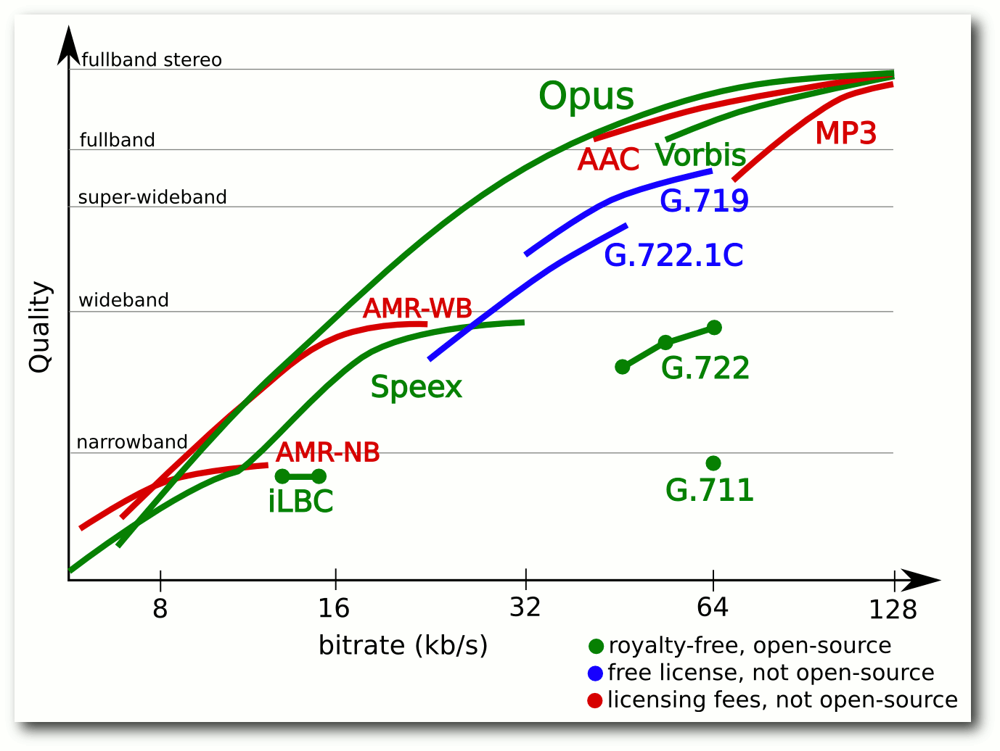Die Bandbreite von Opus. © Opus (CC-BY-3.0)
Laut den Entwicklern eignet Opus sich auch für Internet-Radio, Streaming und Sound-Effekte in Spielen und bietet dabei bei mindestens gleicher Qualität bessere Kompressionsraten als MP3, Ogg oder AAC. Diese Aussage soll in diesem Artikel etwas überprüft werden. Allerdings können nicht alle Anwendungsfälle und Bandbreiten untersucht werden. Der Schwerpunkt des Artikels soll darauf liegen, wie sich Opus beim Einsatz im Web verhält, da Opus der erste Codec ist, auf den sich alle Hersteller einigen konnten. Denn da alle Beteiligten die Opus betreffenden Patente frei lizenzieren, können auch freie Softwareprojekte den Codec nutzen, und kommerzielle Anwender müssen nicht befürchten, für die Patente Lizenzen zahlen zu müssen. Zum Testen bietet sich Firefox 15 an, der bereits eine Referenz-Implementierung [10] des Opus-Frameworks enthält. Firefox unterstützt u.a. auch Ogg Vorbis, aber leider kein FLAC und erst recht nicht MP3, das ein Patent-Minenfeld darstellt. Im Rahmen des Artikels sollen einige Musikdateien ins Opus-Format konvertiert und im Browser abgespielt werden. Für den Test wurden zwei Songs von Blind Guardian ausgewählt – erstens weil diese im verlustfreien FLAC-Format vorliegen und zweitens weil einige der Blind-Guardian-Alben mit herausragender Soundqualität produziert wurden. Die Songs sind „Precious Jerusalem“ vom Album „A Night At The Opera“ und „Traveler in Time“ vom Album „Tales from the Twilight World“. Das Ziel ist, diese Songs mit etwa vergleichbarer (hoher) Qualität in die Formate MP3, Ogg Vorbis und Opus zu konvertieren, einen subjektiven Eindruck vom Klang zu gewinnen und die Einbindung in eine Webseite aufzuzeigen.
Installation
Als ersten Schritt muss man die Opus-Bibliothek und die Tools installieren. Dazu lädt man sie am besten als Quellcode von der Opus-Webseite herunter [11], außer wenn in der verwendeten Distribution bereits die neuesten Versionen enthalten sind. Debian bietet die Version 0.1.2 der Tools (aktuell ist 0.1.5) und Version 0.9.14 der Bibliothek (aktuell ist 1.0.1). Das Kompilieren besteht aus dem üblichen$ ./configure
$ make
zuerst für opus, dann für opus-tools. Bei den Tools ist
zumindest das Entwicklerpaket für libogg nötig. Nach dem
$ make
# make install
# ldconfig
sollte man sich davon überzeugen, dass die richtige Bibliothek verwendet wird,
denn bei Debian z. B. ist unter Umständen die ältere Version nicht
deinstallierbar:
# ldconfig
$ opusenc -V
opusenc opus-tools 0.1.5 (using libopus 1.0.1)
Copyright (C) 2008-2012 Xiph.Org Foundation
opusenc opus-tools 0.1.5 (using libopus 1.0.1)
Copyright (C) 2008-2012 Xiph.Org Foundation
Kompression mit 192 kbit/s
Beim Versuch, die Musikdateien zu konvertieren, stellte sich heraus, dass einige Tools nicht in der Lage sind, das FLAC-Format zu lesen. Das Vorgehen bei der Konvertierung war daher, die FLAC-Datei mit flac -d zu dekodieren und über die Standardeingabe an den Encoder zu reichen. Dies wurde für alle Encoder gemacht, damit die Ergebnisse vergleichbar sind. Im Test wurden folgende Encoder eingesetzt:| Eingesetzte Encoder | ||
| Format | Name | Version |
| MP3 | lame | 3.99.5 |
| MP3 | ffmpeg | 0.11.1 |
| Ogg | oggenc | 1.4.0 |
| Ogg | ffmpeg | 0.11.1 |
| Opus | opusenc | 0.1.5 |
$ flac -c -d Precious\ Jerusalem.flac | lame -b 192 - Precious\ Jerusalem.mp3
$ flac -c -d Precious\ Jerusalem.flac | ffmpeg -y -i pipe: -ab 192k Precious\ Jerusalem.mp3
$ flac -c -d Precious\ Jerusalem.flac | oggenc - -b 192 -o Precious\ Jerusalem.ogg
$ flac -c -d Precious\ Jerusalem.flac | ffmpeg -y -i pipe: -acodec vorbis -aq 60 -strict -2 Precious\ Jerusalem.ogg
$ flac -c -d Precious\ Jerusalem.flac | opusenc --bitrate 192k - Precious\ Jerusalem.opus
Für den zweiten Song sehen diese natürlich entsprechend anders aus.
Zwischen einzelnen Durchläufen können die Ergebnisse durchaus um mehrere
Sekunden schwanken; es wurde immer das beste Ergebnis verwendet. Die Auswahl
der Encoder sowie die genauen Parameter sind nur darauf ausgelegt, schnell eine
Übersicht zu erhalten. Wahrscheinlich wurden viele Möglichkeiten übersehen,
die Ergebnisse zu verbessern. Eine Übersicht befindet sich auf der nächsten Seite.
Was besagen die Ergebnisse nun? Klanglich war bei den Ausgaben kein Unterschied
festzustellen. Das war auch nicht zu erwarten, denn bei 192 kbit/s kann
eigentlich kein Hörer mehr irgendwelche Unterschiede zur unkomprimierten
Version erkennen, selbst mit der besten Anlage nicht. Opus zeichnet sich durch
die beste Kompression aus, noch knapp vor MP3. Ogg liegt 3% höher als MP3,
berechnet die Bitrate aber auch anders. Dafür ist Ogg mit oggenc am
schnellsten, Opus folgt aber bereits knapp dahinter auf Platz 2.
$ flac -c -d Precious\ Jerusalem.flac | ffmpeg -y -i pipe: -ab 192k Precious\ Jerusalem.mp3
$ flac -c -d Precious\ Jerusalem.flac | oggenc - -b 192 -o Precious\ Jerusalem.ogg
$ flac -c -d Precious\ Jerusalem.flac | ffmpeg -y -i pipe: -acodec vorbis -aq 60 -strict -2 Precious\ Jerusalem.ogg
$ flac -c -d Precious\ Jerusalem.flac | opusenc --bitrate 192k - Precious\ Jerusalem.opus
| Ergebnisse für „Precious Jerusalem“ | |||
| Format | Name | Größe | Zeit |
| FLAC | - | 49544734 | - |
| MP3 | lame | 9175248 | 18,0s |
| MP3 | ffmpeg | 9175282 | 15,4s |
| Ogg | oggenc | 9250406 | 13,6s |
| Ogg | ffmpeg | 9522530 | 18,9s |
| Opus | opusenc | 9125200 | 14,0s |
| Ergebnisse für „Traveler in Time“ | |||
| Format | Name | Größe | Zeit |
| FLAC | - | 46817321 | - |
| MP3 | lame | 8562728 | 17,4s |
| MP3 | ffmpeg | 8562762 | 14,0s |
| Ogg | oggenc | 8635946 | 12,4s |
| Ogg | ffmpeg | 10913418 | 17,4s |
| Opus | opusenc | 8496679 | 13,1s |
Platzsparende Kompression
Interessant ist nun noch die Option, die Qualität der kodierten Datei zu reduzieren, um die Dateigröße nochmals stark zu verringern. Für diesen Test reicht es, oggenc und opusenc zu betrachten, da MP3 bei niedrigen Bitraten bekanntermaßen sehr schlecht klingt. Weil die niedrigste wählbare Qualität bei oggenc etwa 48 kbit/s entspricht, wurde dieser Wert auch für opusenc verwendet. Die vollständigen Kommandozeilen für diesen Fall lauteten:$ flac -c -d Precious\ Jerusalem.flac | oggenc - -q -1 -o Precious\ Jerusalem.ogg
$ flac -c -d Precious\ Jerusalem.flac | opusenc --bitrate 48k - Precious\ Jerusalem.opus
Hier zeigt sich der Opus-Kodierer deutlich schneller als Ogg, und die
Dateigröße liegt ein klein wenig niedriger, was aber auch daran liegen kann,
dass die Ogg-Datei im Schnitt 48,8 und nicht 48,0 kbit/s liefert. Man kann
daher sagen, dass sie bei der Dateigröße gleichauf liegen.
$ flac -c -d Precious\ Jerusalem.flac | opusenc --bitrate 48k - Precious\ Jerusalem.opus
| „Precious Jerusalem“ bei ca. 48 kbit/s | |||
| Format | Name | Größe | Zeit |
| FLAC | - | 49544734 | - |
| Ogg | oggenc | 2334944 | 15,0s |
| Opus | opusenc | 2229264 | 10,8s |
Opus im Web
Da Opus nun als Standard-Codec in Browsern empfohlen wird, soll ein kurzer Test im Browser folgen. Zum Testen wird Firefox 15 verwendet, der bereits eine Referenz-Implementation des Opus-Frameworks enthält. Dazu wurde eine Datei mit der Endung html angelegt, die die folgenden zwei Zeilen enthält:<html>
<audio src="PrecJer.opus" controls>
Öffnet man die Datei in Firefox, sollte ein Audio-Player erscheinen und die
Datei sollte abspielbar sein. Das war schon alles!
<audio src="PrecJer.opus" controls>
Darstellung des audio-Tags in Firefox 15 mit Opus-Audio
Fazit
Betrachtet man Opus nur als Alternative zu Ogg auf dem Desktop, so kann noch kein abschließendes Urteil gefällt werden. Noch ist die Infrastruktur für Opus nur schwach entwickelt und bei den Dateigrößen und dem Klang ergibt sich kein Vorteil zu Ogg. Es ist auch eher unwahrscheinlich, dass sich die Dateigrößen bei gegebener Bitrate noch wesentlich ändern. Jedoch könnte man Dateien mit Opus in niedrigeren Bitraten abspeichern und somit Platz sparen, wenn Opus hierbei gleich gut oder besser klingt als andere Formate bei höheren Bitraten. Der Kodierer von Opus ist schon jetzt sehr schnell und vielleicht lässt er sich noch weiter verbessern. Die eigentliche Bedeutung von Opus liegt jedoch auf zwei anderen Gebieten. Zum einen ist ein Einsatz im Bereich der (meist schmalbandigen) Sprachübertragung oder beim Streaming vorgesehen. Zum anderen ist Opus der erste Codec, auf den sich die Browser-Hersteller einigen konnten, da er lizenz- und patentfrei ist. Ein breiter Einsatz im Web ist daher zu erwarten. Obwohl Opus noch sehr jung ist, ist der Codec bereits in GStreamer, FFMpeg, Foobar2000, K-Lite Codec Pack, und Lavfilters integriert. Unterstützung für VLC, Rockbox und Mumble ist in Arbeit. Nur kann es natürlich noch eine Weile dauern, bis die entsprechenden neuen Versionen dieser Programme in den Distributionen ankommen. Man wird sehen, was daraus noch alles erwächst. Links[1] http://www.pro-linux.de/artikel/2/1591/der-freie-audio-codec-opus.html}.
[2] http://www.pro-linux.de/news/1/14421/codec-spezifikationen-aus-html5-entfernt.html
[3] http://www.pro-linux.de/news/1/18864/freier-audio-codec-opus-standardisiert.html
[4] http://www.ietf.org/
[5] http://tools.ietf.org/html/rfc6716
[6] https://en.wikipedia.org/wiki/WebRTC
[7] http://opus-codec.org/
[8] https://de.wikipedia.org/wiki/Lineare_Vorhersage
[9] https://de.wikipedia.org/wiki/Diskrete_Kosinustransformation
[10] https://hacks.mozilla.org/2012/07/firefox-beta-15-supports-the-new-opus-audio-format/
[11] http://opus-codec.org/downloads/
| Autoreninformation |
| Hans-Joachim Baader (Webseite) befasst sich seit 1993 mit Linux. 1994 schloss er erfolgreich sein Informatikstudium ab, machte die Softwareentwicklung zum Beruf und ist einer der Betreiber von Pro-Linux.de. |
Diesen Artikel kommentieren
Zum Index
systemd – Das Init-System
von Stefan Betz Einige Distributionen, allen voran Fedora, openSUSE und Arch Linux, verwenden schon das neue Init-System systemd. Dieser Artikel soll einen groben Überblick zu systemd liefern und beinhaltet zudem einen Vergleich zu Upstart.Was ist ein Init-System?
Beim Starten eines Rechners geschehen viele Dinge. Für viele ist bekannt, dass zuerst das sogenannte BIOS [1] gestartet wird. Auf neueren Systemen kommt hingegen UEFI [2] zum Einsatz. Beide sind zum Erkennen der installierten Hardware notwendig. Nach diesem Schritt wird der Bootloader gestartet, in der Regel ist GRUB_2 in Gebrauch. Dieser kümmert sich darum, den Linux-Kernel und die Initial Ramdisk [3] zu laden. Nachdem auch dieser Vorgang abgeschlossen ist, folgt der Start des ersten „richtigen“ Prozesses auf einem Unix-System: des Init-Systems [4]. Aufgabe dieses Init-Systems ist es, das System für den Benutzer in einen brauchbaren und definierten Zustand zu überführen. Ohne dieses würde man nur auf einer Shell sitzen, bei welcher die Übersetzung, Uhrzeit, Netzwerk und viele andere Sachen fehlen würden. Auch ein Mehrbenutzerbetrieb wäre mangels gestarteter Dienste nicht möglich. Um diesen definierten Zustand zu erreichen, folgt das Init-System bestimmten Regeln, welche beim gängigen SysVinit in Shellskripten niedergeschrieben sind. Dazu kommen noch einige Konfigurationsdateien der vielen Dienste, welche man heute auf einem modernen System vorfindet.Geschichtliches
Im Laufe der Entwicklung hin zu modernen Unix-Systemen wurde vieles an grundlegender Software immer wieder modernisiert, dazu gehört auch das Init-System, welches für das Starten von Prozessen verantwortlich ist.SysVinit
SysVinit ist ein sehr altes System zum Starten von Diensten, denn als Grundlage dient ein Design von 1983. Daher gibt es weder Abhängigkeiten, noch Events und so wird dieses System modernen Desktops und Notebooks nicht mehr gerecht. Dienste werden hier strikt der Reihe nach gestartet, unabhängig davon, ob sie auch parallel gestartet werden könnten. SysVinit setzt auf viele Skripte, welche in weiten Teilen ähnliche oder sogar gleiche Aufgaben erledigen. Häufig benutzte Funktionen wurden aber mit der Zeit auf gemeinsam genutzte Skripte (Includes) ausgelagert, um zumindest im Ansatz dem DRY-Prinzip [5] zu entsprechen. Die Skripte können je nach Distribution an unterschiedlichen Orten, zum Beispiel /etc/rc.d oder /etc/init.d, liegen und auch die Aktivierung und Deaktivierung von Diensten kann abhängig von der Distribution unterschiedlich erfolgen – zum Beispiel durch symbolische Links in /etc/rcX.d oder einem Eintrag in der /etc/rc.conf. Für SysVinit ist es nicht zuverlässig möglich, Dienste sauber zu beenden. In der Regel wird das Skript entweder einen Prozess anhand seiner gespeicherten Prozess-ID beenden oder aber mit killall alle in Frage kommenden Prozesse beenden. Dienste sind hiervon ausgenommen, da sie eine eigene Logik zum Beenden haben. Ein bekannter Dienst, welcher sich beispielsweise nicht sauber beenden lässt, wäre NRPE [6], der für Monitoring über Nagios oder Icinga benötigt wird.Upstart
Upstart ist eine relativ neue Entwicklung für das Init-System. Im Gegensatz zu dem nachfolgend beschriebenen systemd, welches mit Abhängigkeiten arbeitet, wird hier alles über Events [7] geregelt. Upstart ist der erste Schritt zur Vereinfachung der Init-Skripte, welche nun unter /etc/init liegen. Ein weiterer Unterschied ist, dass zum Deaktivieren eines Services die Events im Init-Skript deaktiviert werden müssen (bis Version 1.3). systemd arbeitet hier wie auch schon SysVinit mit symbolischen Verknüpfungen [8]. Upstart greift bei Weitem nicht so tief in ein vorhandenes System ein. Unter anderem wird nicht verlangt, Konfigurationen über bestimmte, vorgegebene Konfigurationsdateien zu erledigen. Die Dokumentation wurde vor allem in den letzten Versionen stark ausgebaut. Dies war früher ein häufiger Kritikpunkt. Upstart wurde neben Ubuntu auch eine Zeit lang von anderen Distributionen wie zum Beispiel Fedora [9] verwendet. Viele Entwickler sind aber nicht bereit, an Upstart mitzuentwickeln, da Canonical hierzu eine Beitragszustimmung [10] verlangt.OpenRC
Neben systemd, SysVinit und Upstart gibt es auch noch OpenRC [11], welches häufig bei Gentoo-Systemen verwendet wird. OpenRC wird in diesem Artikel der Einfachheit halber nicht weiter beschrieben.Was ist systemd?
systemd ist ein neues Init-System, welches alle Möglichkeiten des Linux Kernels optimal ausnutzt und auf einige alte Konzepte verzichtet. Es wird weder bestehender Code verwendet, noch ist es zu bestehenden Init-Systemen kompatibel. systemd wird von Lennart Poettering [12] entwickelt, welcher unter anderem für PulseAudio, Avahi und einige andere Programme verantwortlich ist, die bekannt und teilweise umstritten sind. Ziel der Entwicklung ist es, ein Init-System zu schaffen, welches für den Anwender nachvollziehbar handelt, zuverlässig funktioniert und gleichzeitig einige Unzulänglichkeiten bisheriger Systeme behebt.Die Vor- und Nachteile von systemd
Vorteile
Ein Vorteil von systemd ist, dass die Arbeitsweise von vielen kleinen Skripten (SysVinit) hin zu systemd, also einem Skript, verlagert wird. Der Administrator beschäftigt sich also nicht mehr mit dem Schreiben von Init-Skripten, sondern erstellt lediglich Anweisungen („Unit Files”) wie ein Programm zu starten ist und welche Abhängigkeiten dieses hat. Des Weiteren kann systemd genau feststellen, ob ein bestimmter Dienst läuft, und kann diesen darüber hinaus auch zuverlässig beenden. Bei Runleveln [13] – bei systemd eigentlich Targets – zeigt sich der Vorteil, dass diese unabhängig von der aktuellen Position und unabhängig davon, ob andere Dienste zwischendurch gestartet oder beendet wurden, zielsicher erreicht werden können. Gehört zum Beispiel zu einem Target serverbetrieb.target kein Apache, wird dieser beim Wechsel vom Target privatstuff.target zuverlässig beendet und dafür ggf. ein anderer Dienst aktiviert. Als weiteren Punkt gibt es die Socket Activation: systemd ist in der Lage Dienste erst zu starten, wenn dies tatsächlich erforderlich ist. Dies ist vor allem hilfreich für Maschinen aus der Softwareentwicklung, welche wohl nicht immer alle Dienste benötigen, diese aber gerne bei Bedarf automatisch gestartet hätten. Außerdem werden mit systemd einheitliche Konfigurationsdateien eingeführt: systemd definiert genau, wo welche Informationen konfiguriert werden müssen. Das heißt, dass sich jede Distribution mit systemd zu weiten Teilen gleich verhält – zumindest was Dienste angeht; Paketverwaltungen und Co. bleiben hiervon unberührt. systemd bringt zudem noch die Funktion, dass Dienste, welche nicht selbstständig in einen anderen Benutzerkontext wechseln, dies in Zukunft selbst erledigen können. Ein weiterer Vorteil ist, dass sich systemd während der Laufzeit durch eine neuere Version selbst ersetzen kann. Ein Neustart für ein Sicherheitsupdate oder neue Features am Init-System ist also nicht nötig. 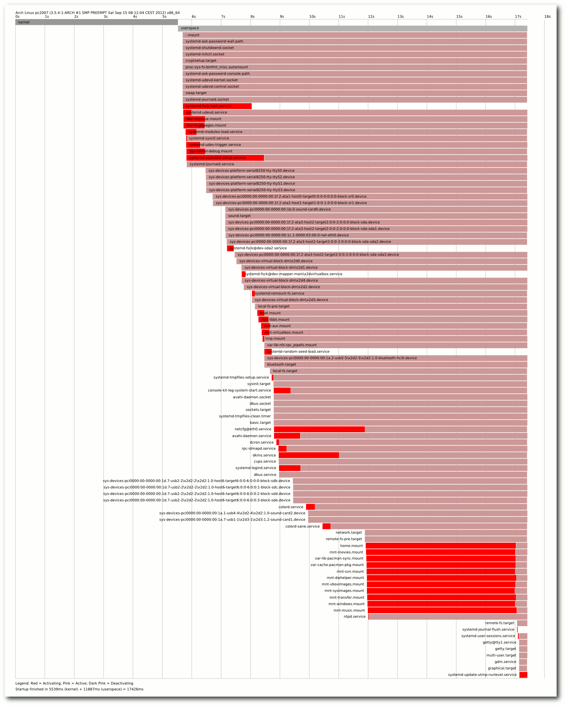Visualisierung der Aktivitäten, die systemd ausführt.
Nachteile
Neben den genannten Vorteilen gibt es auch hier wieder Nachteile, denn systemd läuft nur auf einem Kernel, welcher bestimmte Features wie zum Beispiel Control Groups bereitstellt. Dies ist aktuell ausschließlich bei Linux der Fall, eine Portierung auf andere Unix-Derivate ist aktuell nicht geplant und daher unwahrscheinlich. Zudem begeht systemd Bruch mit Bestehendem: Es stellt zu weiten Teilen einen kompletten Neuanfang dar. Dies bedeutet aber auch, dass Bekanntes nicht mehr wie bekannt funktioniert und ein Umdenken beim Anwender erforderlich ist. systemd verlagert zudem die Komplexität von vielen kleinen Skripten in eine zentrale Software.journald
journald ist ein Teil von systemd und ist ein Ersatz für den bestehenden Syslog- und logrotate-Dienst. Nachteil ist, dass die Logdateien in einem bisher nicht dokumentiertem, binärem Format, das nicht von Menschen gelesen werden kann, abgespeichert werden und somit ein Zugriff mittels den Tools wie less, more oder grep nicht mehr möglich ist. journald definiert darüber hinaus aber auch die Möglichkeit, Metadaten in Logdateien zu schreiben oder Logdateien zu signieren (FSS). Das sorgt in manchen Anwendungsfällen dafür, dass Logdateien nicht manipuliert, aber dennoch auffällig gelöscht werden können. Ebenfalls wurden bei journald einige Kritikpunkte der bisherigen syslog/logrotate-Lösung behoben. So war es möglich, dass diese einem das Dateisystem voll schreiben – journald passt hier automatisch auf – oder dass Informationen über viele Dateien verstreut liegen. Zugriff auf diese Logfiles erfolgt über das Tool journalctl, welches auch einem normalen Benutzer das vollständige Systemlog anzeigt, sofern man Mitglied der Gruppe adm ist.systemd
systemd arbeitet anders. Es beschäftigt sich nur noch mit Abhängigkeiten und nicht mit Events und der Frage, wie etwas zu tun ist. Beim Start des Systems laufen viele Prozesse gleichzeitig. Units werden, wenn möglich, gleichzeitig gestartet und die verschiedenen Targets bis zum gewünschten Ziel automatisch anhand der Konfiguration durchlaufen.Anwendung
Es folgt eine kleine Liste gängiger Aktionen. Auf Links wie start oder stop, welche die Distributionen oft verwenden, wurde dabei verzichtet.| Aktionen | |||
| Aktion | sysvinit | upstart | systemd |
| Dienst starten | /etc/init.d/dienstname start | initctl start dienstname | systemctl start dienstname.service |
| Dienst aktivieren | Symlink in rcX.d | Manipulation Job oder Override File | systemctl enable dienstname.service |
| Dienst neustarten | /etc/init.d/dienstname restart | initctl restart dienstname | systemctl restart dienstname.service |
| Dienst ändern | Modifikation Initskript | Modifikation Job oder Override File | Überschreiben des Distributorscripts in /etc |
| Runlevel ändern | telinit runlevel | telinit runlevel | systemctl isolate runlevel.target |
- SysVinit erfordert in jedem Skript eine bestimmte, aber unterschiedliche Logik zum Starten, Neustarten und Beenden des Dienstes.
- Upstart erfordert zum Aktivieren/Deaktivieren eine Modifikation des Jobs.
- Upstart erfordert zum Verändern eine Modifikation des Skriptes, welches der Distributor mitliefert. Etwas, das normalerweise nur in Ausnahmefällen gemacht werden sollte! Ab Version 1.3 gibt es hierzu die Möglichkeit der sogenannten „Override Files“.
- Weder SysVinit noch Upstart bieten eine zuverlässige Möglichkeit, um unabhängig von der aktuellen Position definiert ein bestimmtes Runlevel zu erreichen.
Unit Files
Ein zentrales Konzept von systemd sind die Unit-Files, welche die Init-Skripte von anderen Systemen ersetzen und einfacher aufgebaut sind.Unit Typen
Es gibt verschiedene Arten von Unit Files, nachfolgend ein paar Beispiele:| Unit Files | |
| Dienste | Typen |
| .service | Typ für normale Dienste |
| .target | Zieltyp, dient z .B. als Ersatz für Runlevels (graphical.target), aber auch für Zwischenschritte (network.target, local-fs.target, …) |
| .mount | Typ für Mountpoints, meist automatisch durch systemd-fstab-generator erzeugt |
| .socket | Typ für Socket Activation von Diensten |
Vergleich
Es soll nun ein Dienst bei allen drei Systemen verglichen werden. Ausgewählt wurde hierzu cron [14], welcher auf den meisten Systemen zu finden sein sollte. Den Anfang macht SysVinit:#!/bin/sh
# Start/stop the cron daemon.
#
### BEGIN INIT INFO
# Provides: cron
# Required-Start: $syslog $time
# Required-Stop: $syslog $time
# Default-Start: 2 3 4 5
# Default-Stop: 0 1 6
# Short-Description: Regular background program processing daemon
# Description: cron is a standard UNIX program that runs user-specified programs at periodic scheduled times.
# vixie cron adds a number of features to the basic UNIX cron, including better security and more powerful configuration options.
### END INIT INFO
test -f /usr/sbin/cron || exit 0
#LSBNAMES='-l' # Uncomment for LSB name support in /etc/cron.d/
. /lib/lsb/init-functions
case "$1" in
start) log_daemon_msg "Starting periodic command scheduler" "crond"
start-stop-daemon --start --quiet --pidfile /var/run/crond.pid --name
cron --startas /usr/sbin/cron -- $LSBNAMES
log_end_msg $?
;;
stop) log_daemon_msg "Stopping periodic command scheduler" "crond"
start-stop-daemon --stop --quiet --pidfile /var/run/crond.pid --name
cron
log_end_msg $?
;;
restart) log_daemon_msg "Restarting periodic command scheduler" "crond"
start-stop-daemon --stop --retry 5 --quiet --pidfile /var/run/crond.pid
--name cron
start-stop-daemon --start --quiet --pidfile /var/run/crond.pid --name
cron --startas /usr/sbin/cron -- $LSBNAMES
log_end_msg $?
;;
reload|force-reload) log_daemon_msg "Reloading configuration files for periodic
command scheduler" "crond"
# cron reloads automatically
log_end_msg 0
;;
*) log_action_msg "Usage: /etc/init.d/cron
{start|stop|restart|reload|force-reload}"
exit 2
;;
esac
exit 0
Listing: SysVinit
Jetzt kommt der entsprechende Upstart-Job:
# Start/stop the cron daemon.
#
### BEGIN INIT INFO
# Provides: cron
# Required-Start: $syslog $time
# Required-Stop: $syslog $time
# Default-Start: 2 3 4 5
# Default-Stop: 0 1 6
# Short-Description: Regular background program processing daemon
# Description: cron is a standard UNIX program that runs user-specified programs at periodic scheduled times.
# vixie cron adds a number of features to the basic UNIX cron, including better security and more powerful configuration options.
### END INIT INFO
test -f /usr/sbin/cron || exit 0
#LSBNAMES='-l' # Uncomment for LSB name support in /etc/cron.d/
. /lib/lsb/init-functions
case "$1" in
start) log_daemon_msg "Starting periodic command scheduler" "crond"
start-stop-daemon --start --quiet --pidfile /var/run/crond.pid --name
cron --startas /usr/sbin/cron -- $LSBNAMES
log_end_msg $?
;;
stop) log_daemon_msg "Stopping periodic command scheduler" "crond"
start-stop-daemon --stop --quiet --pidfile /var/run/crond.pid --name
cron
log_end_msg $?
;;
restart) log_daemon_msg "Restarting periodic command scheduler" "crond"
start-stop-daemon --stop --retry 5 --quiet --pidfile /var/run/crond.pid
--name cron
start-stop-daemon --start --quiet --pidfile /var/run/crond.pid --name
cron --startas /usr/sbin/cron -- $LSBNAMES
log_end_msg $?
;;
reload|force-reload) log_daemon_msg "Reloading configuration files for periodic
command scheduler" "crond"
# cron reloads automatically
log_end_msg 0
;;
*) log_action_msg "Usage: /etc/init.d/cron
{start|stop|restart|reload|force-reload}"
exit 2
;;
esac
exit 0
# cron - regular background program processing daemon
#
# cron is a standard UNIX program that runs user-specified programs at
# periodic scheduled times
description "regular background program processing daemon"
start on runlevel [2345]
stop on runlevel [!2345]
expect fork
respawn
exec cron
Listing: Upstart
Zuletzt systemd:
#
# cron is a standard UNIX program that runs user-specified programs at
# periodic scheduled times
description "regular background program processing daemon"
start on runlevel [2345]
stop on runlevel [!2345]
expect fork
respawn
exec cron
[Unit]
Description=Periodic Command Scheduler
[Service]
ExecStart=/usr/sbin/crond -n
ExecReload=/bin/kill -HUP $MAINPID
Restart=always
[Install]
WantedBy=multi-user.target
Listing: systemd
Grundlegend machen alle drei Varianten das Gleiche. Jedoch ist bei SysVinit
nicht ganz so einfach zu sehen, was genau passiert. Cron ist in diesem Fall ein
sehr einfaches Beispiel, Dienste wie zum Beispiel postfix haben wesentlich
komplexere Init-Skripte, wohingegen die Komplexität von upstart Jobs oder
systemd Units nur unwesentlich zunimmt.
Der upstart-Job wäre, wenn er in /etc/init liegt, schon direkt aktiviert
und würde beim Starten des Systems abgearbeitet werden. SysVinit und systemd
erfordern hierzu Links in /etc/rcX.d (Debian/Ubuntu) beziehungsweise
/etc/systemd/system. Zur Verwaltung dieser Links gibt es auf einem Debian-
oder Ubuntu-System das Tool update-rc.d. Für systemd gibt es
systemctl enable dienst.service.
Im systemd-Unit wurde hier übrigens definiert, dass cron.service zum Target
multi-user.target gehört, das entspricht einem Mehrbenutzerrunlevel im normalen
SysVinit ohne grafische Oberfläche. Wer jetzt glaubt, im grafischen Modus (mit
GDM, KDM, ...) keinen cron haben zu können, irrt: Targets können von anderen
Targets abhängen und so definiert bspw. graphical.target – welches bei
den meisten Distributionen der Standard ist – dass doch bitte zuerst
multi-user.target gestartet werden möchte.
Die WantedBy-Definition ist übrigens nur ein Vorschlag für systemctl. Es ist
jederzeit möglich durch eigene Symlinks unterhalb von
/etc/systemd/system/ das Verhalten und die Reihenfolge zu modifizieren.
Unabhängig davon werden jedoch andere Abhängigkeiten der einzelnen Units
beachtet. Dies führt zum Beispiel immer dazu, dass Avahi gestartet wird, wenn
ein Dienst diesen benötigt, unabhängig davon, in welchem Target der Dienst
gestartet wird.
Description=Periodic Command Scheduler
[Service]
ExecStart=/usr/sbin/crond -n
ExecReload=/bin/kill -HUP $MAINPID
Restart=always
[Install]
WantedBy=multi-user.target
Mythos: systemd sorgt für mehr Komplexität
Es gibt oft Befürchtungen, dass systemd ein System wesentlich komplexer macht. Begründet wird dies oft damit, dass gerade langjährige Anwender sich an das Lesen von Skripten gewöhnt haben und ihnen dieses daher logisch erscheint. Tatsächlich ist es aber so, dass Init-Skripte dem DRY-Prinzip widersprechen und dadurch jedes Skript eine gewisse Komplexität mitbringt. systemd beschäftigt sich hier wesentlich weniger mit der Logik, wie etwas zu tun ist. Es beschäftigt sich damit, was getan werden muss, um einen bestimmten Status zu erreichen. Es ist allerdings richtig, dass durch diese neuen Ansätze von systemd das Init-System als solches komplexer wird. Hintergrund ist, dass Aufgaben von vielen kleinen Skripten in einen einzigen Dienst verlagert werden. Es ist jedoch absehbar, dass auch systemd einen Grad der Stabilität wie SysVinit erreichen wird. Genauso wie Init-Skripte arbeitet auch systemd nur das ab, was konfiguriert wurde. Es gibt keine Magie, die dafür sorgt, dass alles funktioniert.systemd in Ubuntu?
Ubuntu hat bisher noch keinen Plan auf systemd zu wechseln und es gibt in dieser Richtung auch keine Entwicklung, denn die vorhandenen Pakete sind hoffnungslos veraltet und werden nicht aktiv von den Ubuntu-Entwicklern betreut. Ob systemd in Zukunft kommen wird, ist noch ungewiss, hängt aber maßgeblich von Projekten wie GNOME und KDE ab. Sollten diese systemd erfordern, wären diese Desktops nicht mehr länger unter Ubuntu lauffähig. Links[1] https://de.wikipedia.org/wiki/BIOS
[2] https://de.wikipedia.org/wiki/UEFI
[3] https://de.wikipedia.org/wiki/Initrd
[4] https://de.wikipedia.org/wiki/Init
[5] https://de.wikipedia.org/wiki/Don’t_repeat_"ÿourself
[6] https://de.wikipedia.org/wiki/Nagios
[7] https://de.wikipedia.org/wiki/Ereignis_(Programmierung)
[8] http://wiki.ubuntuusers.de/ln#Symbolische-Verknuepfungen
[9] https://fedoraproject.org/de/
[10] http://www.canonical.com/contributors
[11] https://en.wikipedia.org/wiki/OpenRC
[12] https://de.wikipedia.org/wiki/Lennart_Poettering
[13] http://wiki.ubuntuusers.de/Dienste
[14] http://wiki.ubuntuusers.de/cron
| Autoreninformation |
| Stefan Betz (Webseite) ist Hobby-Administrator und gesellschaftskritischer Nerd mit einem Hang zu den Themen Sicherheit und Überwachung. |
Diesen Artikel kommentieren
Zum Index
Die GNU Source Release Collection
von Hans-Joachim Baader Gerade vor Kurzem wurde die GNU SRC (Source Release Collection) in Version 12.09 veröffentlicht. Dieser Artikel stellt sie kurz vor. Redaktioneller Hinweis: Der Artikel „Die GNU Source Release Collection“ erschien erstmals bei Pro-Linux [1].Was ist die GNU Source Release Collection?
Die Beschreibung sagt eigentlich schon alles: GSRC [2], die GNU Source Release Collection, stellt eine einfache Möglichkeit für GNU-Anwender dar, die neuesten offiziell veröffentlichten Versionen der GNU-Pakete zu beziehen und zu kompilieren. Es ist vergleichbar mit dem unter BSD entstandenen pkgsrc, enthält aber nur einige hundert GNU-Pakete. 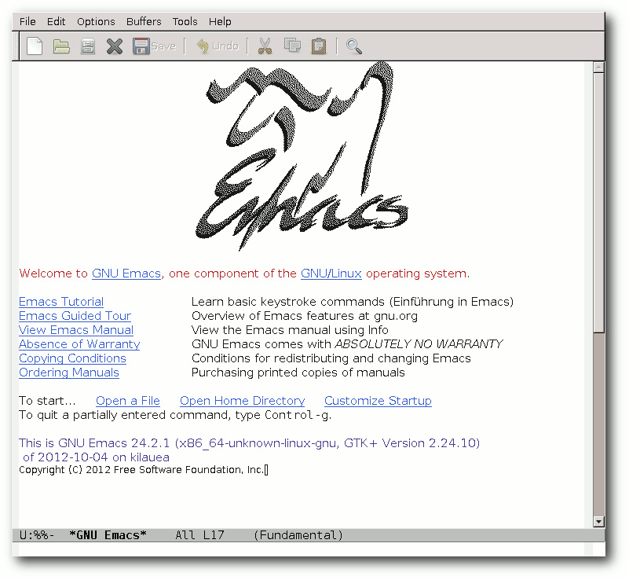Mit GSRC installierte Version 24.2 von Emacs.
Aufgrund der Namensähnlichkeit von GSRC zu pkgsrc könnte man vermuten, dass die Source Release Collection ziemlich groß ist. Tatsächlich enthält sie auch sehr große Projekte, aber ihr Ziel ist sicher nicht, den Umfang von pkgsrc oder anderen Build-Systemen oder Ports-Sammlungen zu erreichen. Vielmehr beschränkt sie sich auf die offiziellen GNU-Projekte. Einige dieser GNU-Projekte sind ein unverzichtbarer Bestandteil vieler Linux-Distributionen, beispielsweise aspell [3], bash und gzip [4], andere sind optional verfügbar. Für viele Anwender gibt es also keinen Grund, GSRC einzusetzen. Will man sich dagegen aktuellere Versionen bestehender Pakete oder nicht paketierte Software aufs System holen, könnte sich GSRC als praktisch erweisen. Man kann natürlich auch jedes dieser Pakete als Quellcode-Archiv von einem GNU-Server holen, entpacken und (meist) mit dem Dreisatz
$ ./configure && make && make install
installieren. Mit GSRC kann man sich die Sache vereinfachen, besonders wenn man
es öfter macht.
Installation
Vorweg sollte man anmerken, dass GSRC wohl noch nicht so lange existiert und sich in einem fortwährenden Prozess der Erweiterung und Verbesserung befindet. Das geht aus der Ankündigung der Version 2012.09.06 [5] hervor. GSRC beruht wesentlich auf dem Versionsverwaltungssystem Bazaar [6]. Dieses ist natürlich auch in GSRC vorhanden, aber um GSRC in Gang zu bringen, muss Bazaar zunächst aus anderen Quellen installiert werden. Falls es von der Distribution nicht bereitgestellt wird, findet man es vielleicht als Binärpaket bei Canonical [7]. Wenn man hier nicht fündig wird, kann man bei Drittanbietern suchen. Hier greifen die üblichen Vorsichtsmaßnahmen, man sollte nur auf vertrauenswürdige Quellen zurückgreifen. Für Slackware ist dies beispielsweise Slackbuilds.org [8]. Bei Slackbuilds handelt es sich jedoch letztlich um Quellcode-Pakete. Wenn man dieses heruntergeladen hat, kann man es entpacken, was ein Unterverzeichnis bzr ergibt. Dort gibt man$ ./bzr.Slackbuild
ein. Das resultierende Paket kann man mit
$ installpkg bzr-<Version>-<Architecture>-1_SBo.tgz
installieren.
Den Quellcode von Bazaar findet man auf
Launchpad [9]. Die Installation ist
auch in diesem Fall simpel: Als Root führt man
$ python setup.py install
aus. Die nötigen Voraussetzungen findet man in der Datei INSTALL.
Nachdem eine funktionierende bzr-Installation vorhanden ist, lässt sich GSRC
schnell einrichten. Man wechselt in ein Verzeichnis, in dem das automatisch
angelegte Verzeichnis gsrc erstellt werden soll. Nun führt man folgende
Zeilen aus:
$ bzr checkout bzr://bzr.savannah.gnu.org/gsrc/trunk/ gsrc
$ cd gsrc
$ ./bootstrap
$ ./configure --prefix=/usr/local
Es ist auch möglich, bzr checkout --lightweight statt bzr
checkout zu verwenden. Dies lädt nur die Informationen zur jeweils neuesten
Version jedes Projekts herunter und geht somit schneller. Der Aufruf
bootstrap sorgt dafür, dass das Skript configure angelegt wird.
Das muss im nächsten Schritt ausgeführt werden.
Mit der Option prefix
gibt man an, wo die Programme installiert werden sollen. Will man keine eigene
Verzeichnishierarchie anlegen, ist wie immer /usr/local eine gute Wahl.
Wenn man ein anderes Verzeichnis wählt, muss man normalerweise diverse
Umgebungsvariablen, die Pfadangaben enthalten (PATH und andere)
erweitern. Das Skript setup.sh nimmt einem diese Aufgabe ab, man muss es
nur an geeigneter Stelle einbinden:
$ cd gsrc
$ ./bootstrap
$ ./configure --prefix=/usr/local
$ source <Pfad zum GSRC-Verzeichnis>/setup.sh
Um GSRC aktuell zu halten, sollte man von Zeit zu Zeit
$ bzr update
ausführen. Das aktualisiert die Informationen über die jeweils neuesten
Versionen.
Verwendung
Wenn man nur testen will, ob die Installation funktioniert, bietet es sich an, das Beispielprojekt GNU Hello zu kompilieren:$ make -C gnu/hello
Dieser Aufruf erstellt, wie Kenner von make wissen, das Standard-Target im
Verzeichnis gnu/hello, in das make vorher wechselt. Die
verwendeten Makefiles beruhen auf dem Bausystem gar. Dieses stellt ein
komplexes Gebilde von Makefiles dar, durchaus ähnlich zu den BSD-Ports, das es
letztlich ermöglicht, für jedes Projekt nur ein paar Variablen definieren zu
müssen, wonach sich make um den Rest kümmert.
Im Falle von GSRC wird das Target all erstellt, das nur vom Target
build abhängt, welches seinerseits alles vom Herunterladen des
Quellcodes über das Konfigurieren bis zum Kompilieren durchführt.
Weil vor dem Kompilieren eines Pakets auch dessen Abhängigkeiten, sofern
vorhanden, kompiliert und installiert werden müssen, kann es passieren, dass
einem die Berechtigungen fehlen, das erzeugte Programm zu installieren. Das
gleiche kann auch bei make install passieren. In diesem Fall muss man
alles als root ausführen. Installiert man dagegen in ein Verzeichnis, das
einem selbst gehört, hat man dieses Problem nicht.
Im ersten Test wurde kein Target bei make verwendet, sondern das implizite
Standard-Target, das bei GSRC, entsprechend einer alten Konvention, all
heißt. Man hätte also auch schreiben können:
$ make -C gnu/hello all
Die weiteren unterstützten Targets sind:
| Targets | |
| Target | Wirkung |
| uninstall | Deinstalliert die Projektdateien |
| clean | Löscht heruntergeladene und generierte Dateien des Projekts |
| fetch | Lädt den Quellcode von einem GNU-Server herunter (Gzip-komprimiertes Tar-Archiv) |
| checksum | Prüft die SHA256-Prüfsumme der heruntergeladenen Datei |
| extract | Entpackt die heruntergeladene Datei |
| configure | Konfiguriert das Paket automatisch |
| fetch-list | Gibt Informationen über das Paket und seine Abhängigkeiten aus |
| dep-list | Gibt eine Liste der Abhängigkeiten des Pakets aus |
| makesums | Prüft die Signatur der heruntergeladenen Datei |
GNU-Entdeckungsreise
Die verfügbaren GNU-Pakete kann man sich durch das Auflisten des Verzeichnisses gnu ansehen. In Ausnahmefällen stehen auch Alpha- oder Betaversionen im Verzeichnis alpha zur Verfügung. Eine bessere Übersicht samt kurzer Beschreibung bietet allerdings die Sektion GNU [10] im FSF-Software-Verzeichnis. Wie man sieht, ist eine ziemliche Fülle von Software vorhanden, von Bibliotheken über Kommandozeilenwerkzeuge und Compiler bis hin zu grafischen Anwendungen und Spielen. Einige der bekannteren GNU-Pakete sind (wenn die Liste auch subjektiv ist) die Rechtschreibprüfung aspell, die Software-Konfigurationswerkzeuge autoconf/autogen/automake, die Shell Bash, der Telefonieserver Bayonne, die verteilte Versionsverwaltung Bazaar, die Klassiker Binutils, Bison und Flex für Software-Entwicklung, cfengine zur Konfigurationsverwaltung eines heterogenen Netzes, die freie Java-Laufzeitbibliothek Classpath, die allgegenwärtigen Coreutils, die Editoren Emacs, Zile, Nano und moe, die GNU Compiler Collection, der Bootloader Grub, der Flash-Player Gnash, die Statistik-Umgebung R, der PostScript-Interpreter GhostScript, die Finanzverwaltung GnuCash, die Arztpraxis-Software GNUMed, die PGP-Alternative GPG, das Krankenhaus-Informationssystem Health, glibc, die Mailinglisten-Verwaltung Mailman, die Dateimanager Midnight Commander und Nautilus, das Algebrasystem Octave, die Bibliotheken ncurses und readline. Die Spiele sind mit GNU Chess, GNU Go, Gnubg (Backgammon), Gnushogi und vielen weiteren vertreten. Interessanterweise ist LISP gleich mit zwei Systemen, dem ANSI-Common-Lisp-Compiler Clisp und GNU Common LISP, vertreten, die LISP-ähnliche Sprache Scheme ebenfalls mit zwei, nämlich Kawa und MIT-Scheme. Desweiteren sind Compiler bzw. Interpreter für viele weitere Sprachen vorhanden. Auch die Desktopumgebungen Gnome und GnuStep gehören zu GNU, sind jedoch nicht in GSRC enthalten. Unter den aufgeführten Programmen befinden sich auch einige, die schon länger nicht mehr aktualisiert wurden und deren Status somit unklar ist. Andere sind offiziell eingestellt, beispielsweise GNU SQL, das eine freie SQL-Datenbank schaffen wollte, mit der Freigabe von MySQL und der Weiterentwicklung von Postgres zu PostgreSQL aber überflüssig wurde.Fazit
GSRC ist interessant für alle, die hin und wieder aktuelle Versionen von GNU-Software benötigen und diese in ihrer Distribution nicht finden. Besonders könnte das auf die Anwender von Unternehmens-Distributionen zutreffen, die ja selten auf dem aktuellsten Stand der Entwicklung sind. Wer auf der Suche nach einem umfangreicheren Softwareangebot ist, für den ist pkgsrc [11] vielleicht die bessere Alternative; die neuesten Versionen der GNU-Software darf man dort aber nicht in jedem Fall erwarten. Nachteile hat GSRC allerdings auch. So arbeitet es seine Abhängigkeiten ab, unabhängig davon, was auf dem System bereits vorhanden ist. Das ist nicht immer schlecht, teilweise aber unnötige Arbeit. Dazu kommt, dass sich einige Projekte in bestimmten Umgebungen nicht kompilieren lassen. Doch hier ist letztlich die Gemeinschaft gefragt, entsprechende Rückmeldungen oder Patches an die Entwickler zu liefern. Links[1] http://www.pro-linux.de/artikel/2/1592/
[2] http://www.gnu.org/software/gsrc/
[3] http://aspell.net/
[4] http://www.gnu.org/software/gzip/
[5] http://lists.gnu.org/archive/html/info-gnu/2012-09/msg00006.html
[6] http://bazaar.canonical.com/en/
[7] http://wiki.bazaar.canonical.com/Download
[8] http://slackbuilds.org/
[9] https://launchpad.net/bzr/ download
[10] http://directory.fsf.org/wiki/GNU
[11] http://www.netbsd.org/docs/software/packages.html
| Autoreninformation |
| Hans-Joachim Baader (Webseite) befasst sich seit 1993 mit Linux. 1994 schloss er erfolgreich sein Informatikstudium ab, machte die Softwareentwicklung zum Beruf und ist einer der Betreiber von Pro-Linux.de. |
Diesen Artikel kommentieren
Zum Index
Der September und der Oktober im Kernelrückblick
von Mathias Menzer Basis aller Distributionen ist der Linux-Kernel, der fortwährend weiterentwickelt wird. Welche Geräte in einem halben Jahr unterstützt werden und welche Funktionen neu hinzukommen, erfährt man, wenn man den aktuellen Entwickler-Kernel im Auge behält.Linux 3.6
Der September brachte im wöchentlichen Rhythmus neue Entwicklerversionen hervor – insgesamt sieben sollten es werden – und auch das finale Release brachte Torvalds gerade noch im September unter. Die verbleibenden Entwicklerversionen lieferten fast durchgehend kleinere Korrekturen und Verbesserungen, bedeutende neue Funktionen kamen nicht hinzu. Bemerkenswert mag noch sein, dass nach vier Kernel-Versionen ein neuer Name vergeben wurde: Aus dem Säbelzahn-Eichhörnchen („Saber-Toothed Squirrel“) wurde nun das verschreckte Streifenhörnchen („Terrified Chipmunk“). Doch hat Linux 3.6 darüber hinaus noch einiges mehr zu bieten. Auch diese Linux-Version geht erneut gegen den „Bufferbloat“ [1], Verzögerungen der Datenübermittlung in Netzwerken, vor. Mit „TCP Small Queues“ werden die Puffer für Netzwerkpakete, die noch auf ihren Versand warten, begrenzt. Ebenfalls für mehr Geschwindigkeit im Netz soll „TCP Fast Open“ (TFO) sorgen. Hierbei handelt es sich um eine Methode, um den Verbindungsaufbau zwischen zwei Rechnern zu beschleunigen, indem bei der ersten Anfrage gleich Nutzdaten, wie beispielsweise die Anforderung einer Webseite, mitgeschickt werden. Dadurch wird eines von bislang drei notwendigen Paketen eingespart und die ersten Antwortpakete sind damit einige Millisekunden schneller da, je nachdem wie lange dieses erste Paket und seine Antwort für ihre jeweiligen Wege benötigt hätten. TFO hat derzeit den Status eines Drafts (Vorschlags) [2] bei der IETF (Internet Engineering Task Force) [3]. Der in Linux 3.6 eingeflossene Code liefert Unterstützung auf der Client-Seite, die Implementierung der Server-Seite soll in 3.7 erfolgen. Ebenfalls noch netzwerknah sind Ergänzungen am Dateisystem CIFS, das nun um Unterstützung für das mit Windows Vista eingeführte proprietäre Protokoll SMB2 [4] ergänzt wurde. SMB2 wird einige Vorteile mit sich bringen, da die verfügbaren Kommandos auf 19 reduziert wurden – SMB1 kannte noch über 100. Daneben wird nun „Pipelining“ unterstützt, wodurch zusätzliche Anfragen über das Netzwerk abgesetzt werden, bevor die Antworten auf die vorangegangenen eingegangen sind, was zu einer beschleunigten Bearbeitung umfangreicher Übertragungen führt. In Zeiten, in denen Arbeitsspeicher in Gigabyte gezählt wird, verliert Swapping [5], also das Auslagern von Speicherseiten von Arbeitsspeicher auf einen weniger schnellen Datenträger, allmählich an Bedeutung. Doch einige spezielle Anwendungen, wie beispielsweise Thin Clients des Linux Terminal Server Projects [6] bedürfen mangels eigener Datenträger sogar eines Swap-Bereichs im Netzwerk. War eine solche Konstellation bislang zwar möglich, so konnte sie dennoch bei intensiver Nutzung zu Fehlern führen. Diese Probleme wurden nun durch Anpassungen der Speicherverwaltung und des Netzwerk-Dateisystems NFS beseitigt. Den Rechner schlafen zu schicken, ist vor allem für Notebook-Nutzer interessant, hält man doch seine aktuelle Umgebung auf Abruf und trotzdem benötigt das Gerät kaum Strom. Doch beim Suspend-to-Disk [7], wo das aktuelle Speicherabbild auf der Festplatte abgelegt wird, dauert der Aufwachvorgang nahezu so lange wie ein regulärer Startvorgang, während Suspend-to-Ram [8] (alle Komponenten außer dem Arbeitsspeicher werden abgeschaltet) nur solange hält, wie der Akku den Arbeitsspeicher noch mit Strom versorgen kann. Linux 3.6 bietet nun eine Kombination an, wobei das Abbild des Arbeitsspeichers sowohl auf der Platte abgelegt als auch im weiterhin mit Energie versorgten Arbeitsspeicher vorgehalten wird. Geht der Strom aus und der Inhalt des RAM verloren, so wird das abgelegte Abbild von der Festplatte genutzt und der Anwender kann trotzdem dort weiterarbeiten, wo er zuvor unterbrochen hat. Ebenfalls in Richtung Energiesparen zielt „PCIe D3cold“. Dabei handelt es sich um den tiefsten Schlafmodus, in den der PCIe-Bus angeschlossene Geräte schicken kann. Die Unterstützung hierfür wurde nun nach mehreren Anläufen in den Linux-Kernel aufgenommen. Im Umfeld der Dateisysteme wurde insbesondere das vergleichsweise junge Btrfs wieder mit neuen Funktionen versorgt. So können nun Größenbeschränkungen für Subvolumes und Gruppen von Subvolumes definiert werden. Ebenso wurde die Behandlung von Disk Quotas [9] unter Ext4 verbessert. Eine vollständige Liste der Neuerungen kann auf der englischsprachigen Seite KernelNewbies [10] eingesehen werden.Linux 3.7
Wenn ein Fenster zwei Wochen lang offen steht, kommt sicherlich jede Menge rein. Das galt diesmal auch für das Merge Window, das Torvalds nach 14 Tagen wieder schloss [11]. Die nackten Zahlen sind beeindruckend; über 11.000 Commits und 15.000 geänderten Dateien sind Spitzenwerte in der Linie der 3.x-Kernel. Die Zahl der entfernten und hinzugefügten Code-Zeilen wird nur von Version 3.2 getoppt, wo größere Umbauten an der Aufteilung der Bereiche, vor allem bei der ARM-Architektur und den Netzwerk-Treibern, vorgenommen wurden. Ähnlich war der Fall auch diesmal gelagert, wo die Bibliotheken für UAPI jeweils in eigenen Bereichen unterhalb der spezifischen Architekturen zusammengefasst wurden. Letztlich machen also nur Verschiebungen von Dateien das größte Volumen aus. Doch führte die Umstellung auch zu vielen Problemen, die ersten Meldungen diesbezüglich schlugen schon nach kurzer Zeit auf der Mailingliste auf. So zogen sich die Nacharbeiten und Korrekturen auch durch die zweite [12] und dritte Entwicklerversion [13] und machten auch dort den Löwenanteil aus. Doch hat der noch in seiner Reifephase befindliche Kernel 3.7 auch andere Neuerungen aufzuweisen. Die ARM-64-Architektur bietet 64-Bit-Unterstützung für ARM-Prozessoren. Multiplatform-Code für ARM soll es künftig ermöglichen, dass nicht für jeden ARM-Prozessortyp ein eigener Kernel kompiliert werden muss, sondern ein generischer Kernel in der Lage ist, auf verschiedenen Ausprägungen der ARM-Architektur zu starten und deren spezielle Gerätetreiber dann im Bedarfsfall nachzuladen. Und um den Eindruck vollständig zu machen, dass Linux 3.7 ein sehr ARM-lastiger Kernel werden wird, wurde auch der Grundstein dafür gelegt, dass der Hypervisor [14] des Virtualisierers Xen [15] auf ARM-Systemen ausgeführt werden kann.Ext4-Problem – oder doch nicht?
Mit seiner Meldung an die Linux Kernel Mailing List stiftete ein Nutzer namens „Nix“ einiges an Aufregung [16]. Er berichtete davon, sein Dateisystem durch die Aktualisierung von Linux 3.6.1 auf 3.6.3 zerstört zu haben und grenzte den Fehler beim Reproduzieren auf Ext4 ein. Der Patch, der als Schuldiger verdächtigt wurde, war auch schon in andere produktive Kernel aufgenommen worden und so schlugen die Wellen schnell hoch. Doch wäre das Problem so schwerwiegend gewesen wie vermutet, wären mehr Anwender davon betroffen gewesen, da der entsprechende Patch von z. B. Fedora bereits verteilt worden war. Dies wies darauf hin, dass die Bedingungen für das Auftreten des Fehlers recht speziell waren. Eine besonnene Überprüfung des Fehlers brachte dann den wahren Schuldigen an Licht: ein kleiner Patch von Ext4-Betreuer Ted T'so selbst, der den Ext4-Code eigentlich vereinfachen sollte [17]. Im Nachhinein stellte sich dann auch heraus, dass das Dateisystem nicht wirklich beschädigt war, sondern lediglich wenige Daten, die beim Auftreten des Fehlers gespeichert wurden, verloren gingen. Das Dateisystem selbst ließ sich mit Bordmitteln wieder herstellen. Letzten Endes handelt es sich bei Ext4 um ein recht stabiles Dateisystem, dessen Änderungen umfangreichen Tests unterzogen werden. Es bleibt nur zu hoffen, dass die Reputation von Ext4 durch diesen Vorfall, der recht schnell von verschieden Seiten aufgenommen und verfolgt wurde, keinen bleibenden Schaden genommen hat. Links[1] https://en.wikipedia.org/wiki/Bufferbloat
[2] http://datatracker.ietf.org/doc/draft-ietf-tcpm-fastopen/
[3] http://www.ietf.org
[4] https://en.wikipedia.org/wiki/Server_Message_Block#SMB2
[5] https://de.wikipedia.org/wiki/Swapping
[6] https://de.wikipedia.org/wiki/Linux_Terminal_Server_Project
[7] https://de.wikipedia.org/wiki/Ruhezustand
[8] https://de.wikipedia.org/wiki/Bereitschaftsbetrieb
[9] https://de.wikipedia.org/wiki/Disk_Quota
[10] https://kernelnewbies.org/Linux_3.6
[11] https://lkml.org/lkml/2012/10/14/281
[12] https://lkml.org/lkml/2012/10/20/136
[13] https://lkml.org/lkml/2012/10/28/150
[14] https://de.wikipedia.org/wiki/Hypervisor
[15] http://www.xen.org/
[16] http://www.pro-linux.de/-0h214a5e
[17] http://www.pro-linux.de/-0h214a6c
| Autoreninformation |
| Mathias Menzer (Webseite) wirft gerne einen Blick auf die Kernel-Entwicklung, um mehr über die Funktion von Linux zu erfahren. und um seine Mitmenschen mit seltsamen Begriffen verwirren zu können. |
Diesen Artikel kommentieren
Zum Index
LanguageTool – Tutorial Teil II: Komplexere XML-Regeln
von Markus Brenneis Nachdem Teil I in der letzten Ausgabe von freiesMagazin [1] das Erstellen einfacher XML-Regeln für LanguageTool erklärte, soll es in dieser Ausgabe um komplexere XML-Regeln gehen. Wie in den vorigen Teilen erklärt, findet LanguageTool Fehler anhand von Regeln, die – anders als in der Schulgrammatik – nicht beschreiben, wie Sätze korrekt gebildet werden, sondern sie beschreiben Fehler.Wie war das nochmal mit der Vorzeitigkeit?
Dem aufmerksamen Leser ist vielleicht der kleine grammatische Patzer im Einleitungssatz aufgefallen: „Nachdem“ kann standardsprachlich nicht mit dem Präteritum [2] benutzt werden, da die Subjunktion [3] „nachdem“ Vorzeitigkeit [4] ausdrückt. Da aber selbst vielen Muttersprachlern diese Regel unbekannt ist, soll LanguageTool eine Regel erhalten, die auf diesen Fehler hinweist. Als erstes wird das Grundgerüst der Regel mit Meldungstext und Beispielsätzen erstellt:<rule id="NACHDEM_PRAETERITUM" name="Grammatik: 'nachdem' mit Präteritum">
<pattern>
<!-- hierher kommt das Erkennungsmuster hin -->
</pattern>
<message>Die Subjunktion 'nachdem' drückt standardsprachlich Vorzeitigkeit aus und kann daher nicht mit dem Präteritum verwendet werden. Verwenden Sie das Perfekt (Präsens im Hauptsatz) oder Plusquamperfekt (Präteritum im Hauptsatz) oder die Subjunktion 'als' zum Ausdrücken von Gleichzeitigkeit.</message>
<short>'Nachdem' kann standardsprachlich nicht mit dem Präteritum verwendet werden. Verwenden Sie Perfekt bzw. Plusquamperfekt.</short>
<example type="correct">Nachdem der Brief <marker>gekommen war</marker>, ging ich nach Hause.</example>
<example type="incorrect">Nachdem der Brief <marker>kam</marker>, ging ich nach Hause.</example>
</rule>
Listing: nachdem_praeteritum.rule
Die Hauptarbeit macht aber der noch leere pattern-Teil. Man muss
sich zunächst im Klaren darüber sein, wie die zu erkennende falsche
grammatische Konstruktion aussehen soll. Die Regel soll zunächst den
Fall erkennen, wenn – wie im Einleitungssatz – der mit „nachdem“
eingeleitete Nebensatz nicht am Satzende steht. Der zu erkennende
Fehler hat die Struktur „nachdem“ + „beliebig viele Wörter“ + „Verb
im Präteritum“ + „,“ (Ende des Nebensatzes). Die XML-Umsetzung
dazu sieht so aus:
<pattern>
<!-- hierher kommt das Erkennungsmuster hin -->
</pattern>
<message>Die Subjunktion 'nachdem' drückt standardsprachlich Vorzeitigkeit aus und kann daher nicht mit dem Präteritum verwendet werden. Verwenden Sie das Perfekt (Präsens im Hauptsatz) oder Plusquamperfekt (Präteritum im Hauptsatz) oder die Subjunktion 'als' zum Ausdrücken von Gleichzeitigkeit.</message>
<short>'Nachdem' kann standardsprachlich nicht mit dem Präteritum verwendet werden. Verwenden Sie Perfekt bzw. Plusquamperfekt.</short>
<example type="correct">Nachdem der Brief <marker>gekommen war</marker>, ging ich nach Hause.</example>
<example type="incorrect">Nachdem der Brief <marker>kam</marker>, ging ich nach Hause.</example>
</rule>
<pattern>
<token skip="-1">nachdem</token>
<marker>
<token postag_regexp="yes" postag="VER:.*:PRT:.*" />
</marker>
<token>,</token>
</pattern>
Listing: nachdem_praeteritum.pattern
Beim ersten Token wird das skip-Attribut verwendet, mit dem
angegeben werden kann, wie viele Tokens (Wörter) maximal zwischen
diesem Token und dem darauffolgenden Token stehen dürfen (der
Standard ist null); -1 bedeutet, dass beliebig viele Wörter
erlaubt sind.
Beim zweiten Token kommen POS-Tags [5]
zum Einsatz. Mit dem regulären Ausdruck [6]
VER:.*:PRT:.* werden alle Verben (VER) gefunden, die im
Präteritum (PRT) stehen. Damit LanguageTool weiß, dass es sich bei
dem angegeben POS-Tag um einen regulären Ausdruck handelt, wird das
Attribut postag_regexp="yes" gesetzt. Um auf diesen regulären
Ausdruck zu kommen, kann man die LanguageTool-Benutzeroberfläche
benutzen. Dort gibt man ein Wort im Präteritum ein (z. B. „kam“) und
klickt im Menü „Datei“ auf „Tag Text“ oder drückt alternativ einfach
die Tastenkombination „Strg“ + „T“. Im untereren Teil des Fensters werden
dann die POS-Tags der eingegebenen Wörter angezeigt. Eine Übersicht
aller POS-Tags mit Erläuterungen befindet sich in diesem
PDF-Dokument [7].
<token skip="-1">nachdem</token>
<marker>
<token postag_regexp="yes" postag="VER:.*:PRT:.*" />
</marker>
<token>,</token>
</pattern>
Der erste Test
Da die Regel auf den ersten Blick ganz gut aussieht, kann sie nun im „Expert Mode“ des „Rule Creators“ [8] getestet werden. Dabei stellt man aber sofort fest, dass sie noch nicht wie gewünscht funktioniert. Folgende Fehlermeldung wird ausgegeben:The rule found an unexpected error in 'Nachdem der Brief gekommen war, ging ich nach Hause.'
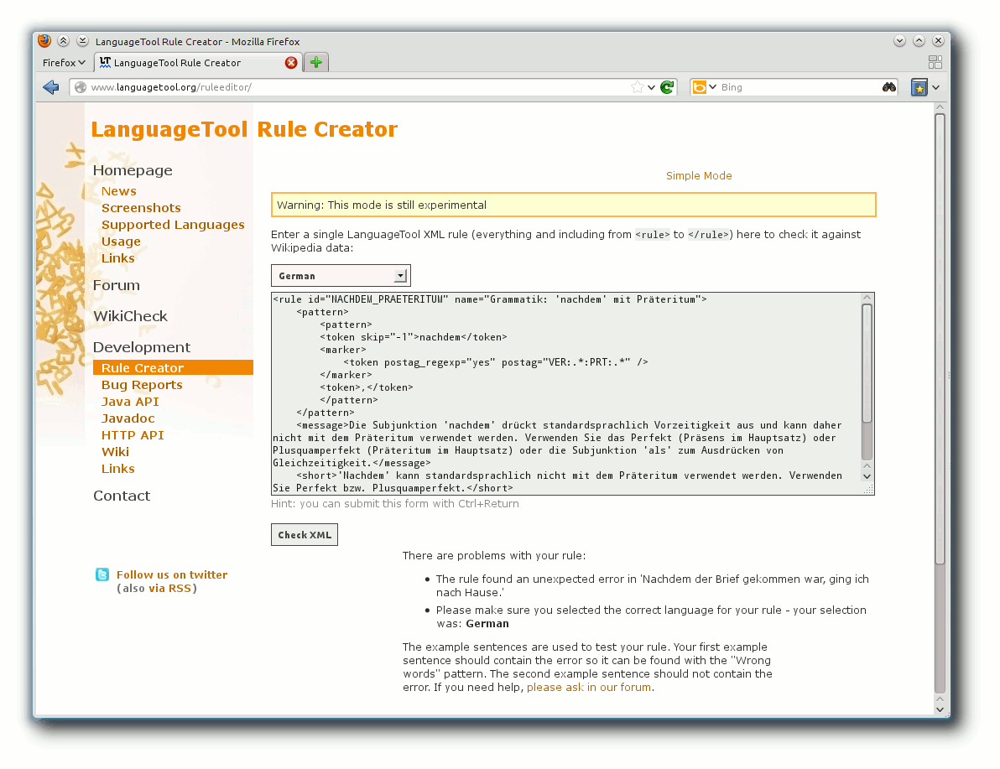Die Regel hat einen „unerwarteten Fehler“ im eigentlich richtigen Beispielsatz gefunden.
In dem eigentlich richtigen Beispielsatz wird ein „Fehler“ gefunden. Das Hilfsverb „war“ ist das Problem, da es zwar im Präteritum steht, hier aber als Hilfsverb für das Plusquamperfekt verwendet wird. Um das Problem zu umgehen, definiert man innerhalb des zweiten Tokens eine Ausnahme (engl. „exception“):
<token postag_regexp="yes" postag="VER:.*:PRT:.*"><exception postag_regexp="yes" postag=".*AUX.*"/></token>
Wenn jetzt das Wort vor dem Komma ein Hilfsverb (AUX) ist, wird kein Fehler
mehr gemeldet.
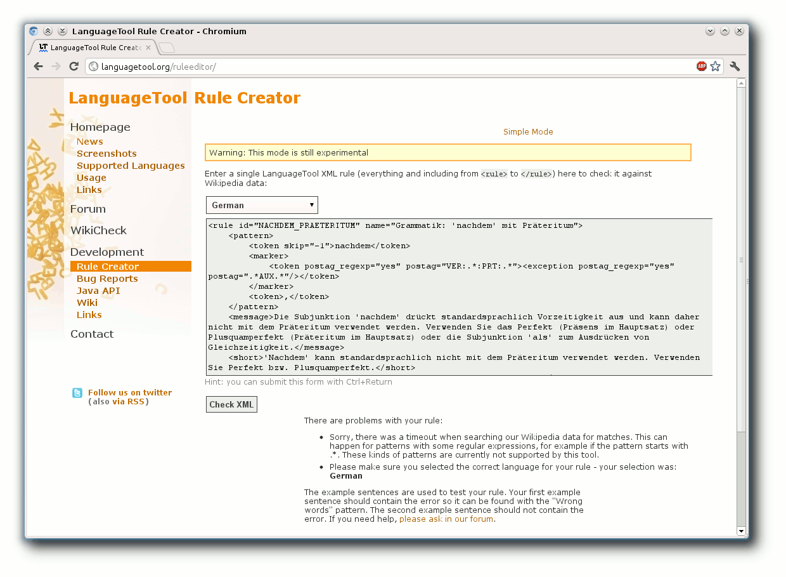Zeitüberschreitung beim „Rule Creator“ wegen der rechenintensiven regulären Ausdrücke
Will man die nun erweiterte Regel im „Rule Creator“ testen, stößt man an dessen Grenzen, denn durch die regulären Ausdrücke kommt es zu einer Zeitüberschreitung [9]. Das Zeitlimit wurde eingeführt, um den Server nicht mit den rechenintensiven regulären Ausdrücken zu überlasten. Um die Zuverlässigkeit der Regel trotzdem testen zu können, gibt es die Möglichkeit, auf dem eigenen Rechner Tests anhand von Wikipedia-Artikeln durchzuführen. Dazu müssen zunächst die Artikel heruntergeladen werden [10]. Es ist übrigens nicht nötig, die ganze Datei (mehr als 2 GiB!) herunterzuladen, sondern man kann schon die nicht vollständig heruntergeladene Datei entpacken. Wenn die aus dem bz2-Archiv extrahierte XML-Datei größer als 200 MiB ist, reicht dies zum Testen vollkommen aus. Ferner muss die Entwicklerversion der Stand-Alone-Variante von LanguageTool [11] heruntergeladen und entpackt werden. Nun gibt es zwei Methoden, in den Wikipedia-Daten nach Fehlern zu suchen.
Die schnelle Methode: Indexer
Eine Möglichkeit, mit der das Testen recht schnell geht, ist die Verwendung des Wikipedia-Indexers [12]. Dazu muss jedoch zunächst ein Index aufgebaut werden, der für die schnelle Suche verwendet werden kann. Wenn die XML-Datei im Verzeichnis mit den LanguageTool-Dateien liegt, führt man in diesem Verzeichnis folgenden Befehl aus, um einen Index mit 3000 Artikeln im Verzeichnis wikipediaIndexDe zu erstellen:$ java -cp LanguageTool.jar:bliki-3.0.3.jar:lucene-core-4.0.0-BETA.jar:lucene-analyzers-common-4.0.0-BETA.jar org.languagetool.dev.wikipedia.WikipediaIndexHandler dewiki-latest-pages-articles.xml wikipediaIndexDe de 3000
Um jetzt die deutsche Regel (de) mit der ID NACHDEM_PRAETERITUM
in der Datei grammar.xml im Verzeichnis org/languagetool/rules/de/
zu testen, verwendet man diesen Befehl:
$ java -cp LanguageTool.jar:lucene-core-4.0.0-BETA.jar:lucene-sandbox-4.0.0-BETA.jar:lucene-queries-4.0.0-BETA.jar org.languagetool.dev.index.Searcher NACHDEM_PRAETERITUM org/languagetool/rules/de/grammar.xml de wikipediaIndexDe
Nach kurzer Wartezeit bekommt man alle Sätze, in denen die Regel
Fehler gefunden hat, angezeigt.
Die zuverlässigere Methode: testwikipedia.sh
Da der Indexer wegen Limitierungen der Bibliothek Lucene [13] nicht alle Funktionen, die in den Regeln verwendet werden können, unterstützt [14], gibt es noch eine andere Variante, die zwar langsamer ist, aber mit Sicherheit alle Fehler findet, die auch LanguageTool fände. Zunächst muss das latest im Dateinamen von dewiki-latest-pages-articles.xml durch ein Datum im Format JJJJMMTT ersetzt werden, also beispielsweise dewiki-20121010-pages-articles.xml. Wenn die xml-Datei im selben Verzeichnis liegt wie die entpackten LanguageTool-Dateien, kann mit folgendem Befehl die deutsche Regel (de) mit der ID NACHDEM_PRAETERITUM anhand von 3000 Wikipediaartikeln geprüft werden, wobei nach 100 gefundenen Fehlern abgebrochen wird:$ sh testwikipedia.sh - - de dewiki-20121010-pages-articles.xml NACHDEM_PRAETERITUM 3000 100 > out
Die Ausgabe des Befehls wird in die Datei out geschrieben. Um die
relevanten Zeilen aus der Datei auszulesen, kann der Befehl grep
benutzt werden:
$ grep -v "0 matches" out
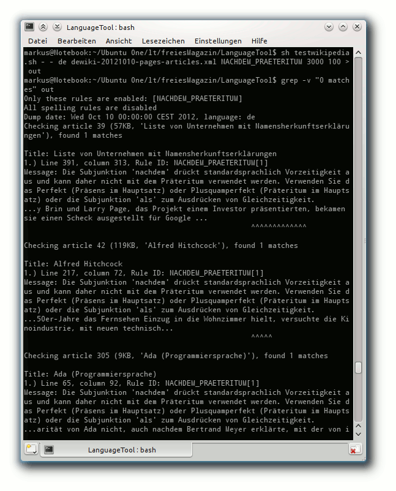Der Test mit testwikipedia.sh zeigt sowohl Schwächen der Regel als auch der Wikipediaartikel.
Beheben von Fehlalarmen
Jetzt gibt es nur noch wenige Fehlalarme, z. B. im Satz „Nachdem sich jedes Teilchen in einem Zustand, der nicht gut war, befunden hatte, ging es weiter.“. Hier ist das „Zustand“ das Problem, da es trotz Großschreibung als Verb markiert ist, weil es ja theoretisch am Satzanfang als Verb benutzt werden kann. Das Problem kann umgangen werden, indem explizit verlangt wird, dass das Verb mit einem kleingeschriebenen Buchstaben anfangen soll (regulärer Ausdruck [a-zäüö].*).<pattern case_sensitive="yes">
<token skip="-1" regexp="yes">[Nn]achdem</token>
<marker>
<token postag_regexp="yes" postag="VER:.*:PRT:.*" regexp="yes">[a-zäüö].*<exception postag_regexp="yes" postag=".*AUX.*"/></token>
</marker>
<token>,</token>
</pattern>
Listing: nachdem_praeteritum2.pattern
Damit der reguläre Ausdruck den gewünschten Effekt hat, wird in der
ersten Zeile die Unterscheidung zwischen Groß- und Kleinschreibung
aktiviert. Außerdem muss im ersten Token nun der reguläre Ausdruck
[Nn]achdem verwendet werden, damit auch großgeschriebene „Nachdem“s
bei der Prüfung berücksichtigt werden.
Ein weiteres Problem für die Regel sind verschachtelte Sätze wie
„Nachdem er, wie er sagte, zu Hause angekommen war, aß er etwas.“.
Da das Auffinden eines Fehlers in solchen Konstruktionen mit
einfachen Mitteln nicht möglich ist (die deutsche Sprache ermöglicht
sehr komplexe Satzgefüge [15]),
soll LanguageTool alle Sätze, bei denen zwischen „nachdem“ und Verb
ein Komma steht, ignorieren. Dies ist wieder über eine Ausnahme
möglich:
<token skip="-1" regexp="yes">[Nn]achdem</token>
<marker>
<token postag_regexp="yes" postag="VER:.*:PRT:.*" regexp="yes">[a-zäüö].*<exception postag_regexp="yes" postag=".*AUX.*"/></token>
</marker>
<token>,</token>
</pattern>
<token skip="-1" regexp="yes">[Nn]achdem<exception scope="next">,</exception></token>
Um LanguageTool mitzuteilen, dass sich die Ausnahme auf die Tokens
zwischen Token eins und zwei bezieht, wird scope="next" verwendet.
Die nun gut funktionierende Regel sieht vollständig so aus:
<rule id="NACHDEM_PRAETERITUM" name="Grammatik: 'nachdem' mit Präteritum">
<pattern case_sensitive="yes">
<token skip="-1" regexp="yes">[Nn]achdem<exception scope="next">,</exception></token>
<marker>
<token postag_regexp="yes" postag="VER:.*:PRT:.*" regexp="yes">[a-zäüö].*<exception postag_regexp="yes" postag=".*AUX.*"/></token>
</marker>
<token>,</token>
</pattern>
<message>Die Subjunktion 'nachdem' drückt standardsprachlich Vorzeitigkeit aus und kann daher nicht mit dem Präteritum verwendet werden. Verwenden Sie das Perfekt (Präsens im Hauptsatz) oder Plusquamperfekt (Präteritum im Hauptsatz) oder die Subjunktion 'als' zum Ausdrücken von Gleichzeitigkeit.</message>
<short>'Nachdem' kann standardsprachlich nicht mit dem Präteritum verwendet werden. Verwenden Sie Perfekt bzw. Plusquamperfekt.</short>
<example type="correct">Nachdem der Brief <marker>gekommen war</marker>, ging ich nach Hause.</example>
<example type="incorrect">Nachdem der Brief <marker>kam</marker>, ging ich nach Hause.</example>
<example type="correct">Nachdem er, wie er <marker>sagte</marker>, zu Hause angekommen war, aß er etwas.</example>
</rule>
Listing: nachdem_praeteritum2.rule
<pattern case_sensitive="yes">
<token skip="-1" regexp="yes">[Nn]achdem<exception scope="next">,</exception></token>
<marker>
<token postag_regexp="yes" postag="VER:.*:PRT:.*" regexp="yes">[a-zäüö].*<exception postag_regexp="yes" postag=".*AUX.*"/></token>
</marker>
<token>,</token>
</pattern>
<message>Die Subjunktion 'nachdem' drückt standardsprachlich Vorzeitigkeit aus und kann daher nicht mit dem Präteritum verwendet werden. Verwenden Sie das Perfekt (Präsens im Hauptsatz) oder Plusquamperfekt (Präteritum im Hauptsatz) oder die Subjunktion 'als' zum Ausdrücken von Gleichzeitigkeit.</message>
<short>'Nachdem' kann standardsprachlich nicht mit dem Präteritum verwendet werden. Verwenden Sie Perfekt bzw. Plusquamperfekt.</short>
<example type="correct">Nachdem der Brief <marker>gekommen war</marker>, ging ich nach Hause.</example>
<example type="incorrect">Nachdem der Brief <marker>kam</marker>, ging ich nach Hause.</example>
<example type="correct">Nachdem er, wie er <marker>sagte</marker>, zu Hause angekommen war, aß er etwas.</example>
</rule>
Angst und Schrecken verbreiten
Nun soll eine Regel her, die fälschliche Kleinschreibung in der Wendung „in angst und schrecken verbreiten“ erkennt. Hierbei handelt es nämlich um einen Fehler, der nicht von einer einfachen Rechtschreibprüfung erkannt werden kann, da „angst“ als Adjektiv [16] und „schrecken“ als Verb [17] kleingeschrieben werden. Der pattern-Teil der Regel könnte so aussehen:<pattern case_sensitive="yes">
<marker>
<token>angst</token>
<token>und</token>
<token regexp="yes">[sS]chrecken</token>
</marker>
<token>verbreiten</token>
</pattern>
Listing: angst_und_schrecken.pattern
Hiermit würden die Fehler in „angst und Schrecken verbreiten“ und
„angst und schrecken verbreiten“ erkannt werden. Schön wäre es
jetzt, wenn auch in „angst und schrecken verbreitet“ etc. ein Fehler
gefunden werden würde, also auch dann wenn, eine
flektierte [18]
(engl. „inflected“) Form von
„verbreiten“ verwendet wird. Für diesen Zweck gibt es das
inflected-Attribut:
<marker>
<token>angst</token>
<token>und</token>
<token regexp="yes">[sS]chrecken</token>
</marker>
<token>verbreiten</token>
</pattern>
<token inflected="yes">verbreiten</token>
Insgesamt könnte die Regel so aussehen:
<rule id="IN_ANGST_UND_SCHRECKEN_VERSETZEN" name="Groß-/Kleinschreibung: 'in angst (Angst) und schrecken (Schrecken) versetzen'">
<pattern case_sensitive="yes">
<marker>
<token>angst</token>
<token>und</token>
<token regexp="yes">[sS]chrecken</token>
</marker>
<token inflected="yes">verbreiten</token>
</pattern>
<message>&inwend;<suggestion>Angst und Schrecken</suggestion> werden 'Angst' und 'Schrecken' großgeschrieben.</message>
<short>&prgk;.</short>
<example type="correct">Sie haben <marker>Angst und Schrecken</marker> verbreitet.</example>
<example type="incorrect" correction="Angst und Schrecken">Sie haben <marker>angst und Schrecken</marker> verbreitet.</example>
<example type="incorrect" correction="Angst und Schrecken">Sie haben <marker>angst und schrecken</marker> verbreitet.</example>
</rule>
Listing: angst_und_schrecken.rule
Jetzt wäre es natürlich noch sinnvoll, zusätzliche Regeln für die
Fälle „Angst und schrecken verbreiten“ und die Varianten mit
vorausgehendem Verb zu schreiben und alle Regeln in einer rulegroup
zusammenzufassen.
<pattern case_sensitive="yes">
<marker>
<token>angst</token>
<token>und</token>
<token regexp="yes">[sS]chrecken</token>
</marker>
<token inflected="yes">verbreiten</token>
</pattern>
<message>&inwend;<suggestion>Angst und Schrecken</suggestion> werden 'Angst' und 'Schrecken' großgeschrieben.</message>
<short>&prgk;.</short>
<example type="correct">Sie haben <marker>Angst und Schrecken</marker> verbreitet.</example>
<example type="incorrect" correction="Angst und Schrecken">Sie haben <marker>angst und Schrecken</marker> verbreitet.</example>
<example type="incorrect" correction="Angst und Schrecken">Sie haben <marker>angst und schrecken</marker> verbreitet.</example>
</rule>
Weitere Elemente
Statt jetzt für alle einzelnen Elemente ein Beispiel zu geben, sollen jetzt in Kürze weitere Funktionen von LanguageTool vorgestellt werden. Möchte man, dass an einer Stelle ein beliebiges Wort steht, aber z. B. nicht „kommen“, benutzt man eine Negation mit negate=yes:<token negate="yes">kommen</token>
Man kann auch POS-Tags negieren, sodass beispielsweise alle Formen
von „kommen“, die nicht dem Infinitiv entsprechen, gefunden werden.
Das Token dazu sähe so aus:
<token inflected="yes" negate_pos="yes" postag=".*:INF:.*" postag_regexp="yes">kommen</token>
Hier ist noch ein Tipp zum Arbeiten mit POS-Tags: Will man
beispielsweise prüfen, ob eine Verbform eindeutig zweite Person
Singular ist, kann man folgende Konstruktion verwenden:
<token postag="VER:2:SIN.*" postag_regexp="yes">
<exception negate_pos="yes" postag="VER:2:SIN.*" postag_regexp="yes"/>
</token>
Zunächst werden alle Verben gefunden, die mindestens das POS-Tag
VER:2:SIN haben. Dann werden alle Wörter ausgeschlossen, die ein
POS-Tag haben, dass nicht VER:2:SIN entspricht. Diese Methode
findet z. B. dann Anwendung, wenn die
Kongruenz [19] zwischen
Subjekt und Prädikat überprüft werden soll.
<exception negate_pos="yes" postag="VER:2:SIN.*" postag_regexp="yes"/>
</token>
Zusammenfassung und Ausblick
Hier ist noch einmal eine Zusammenfassung von allen Elementen, die in Teil II erklärt wurden:- skip (überspringen),
- postag (Wortform),
- postag_regexp="yes",
- inflected="yes" (flektierte Form),
- negate="yes" (Negation),
- exception (Ausnahme),
- scope="next"
[1] http://www.freiesmagazin.de/freiesMagazin-2012-10
[2] http://www.canoo.net/services/OnlineGrammar/Wort/Verb/Tempora/Praet.html
[3] http://www.canoo.net/services/OnlineGrammar/Wort/Konjunktion/Gebrauch/subord.html
[4] http://www.canoo.net/services/OnlineGrammar/Satz/Komplex/Funktion/Adverbial/Temporal.html#Anchor-Vorzeitigkeit-47857
[5] https://de.wikipedia.org/wiki/PoS-Tagging
[6] https://de.wikipedia.org/wiki/Regulärer_Ausdruck
[7] http://www.wolfganglezius.de/lib/exe/fetch.php?media=cl:wklassen.pdf
[8] http://languagetool.org/ruleeditor/
[9] https://de.wikipedia.org/wiki/Timeout
[10] http://download.wikimedia.org/dewiki/latest/dewiki-latest-pages-articles.xml.bz2
[11] http://languagetool.org/download/snapshots/?C=M;O=D
[12] http://languagetool.wikidot.com/how-to-use-indexer-and-searcher-for-fast-rule-evaluation
[13] https://de.wikipedia.org/wiki/Lucene
[14] http://languagetool.wikidot.com/how-to-use-indexer-and-searcher-for-fast-rule-evaluation#toc9
[15] https://de.wikipedia.org/wiki/Satzgefüge
[16] http://www.korrekturen.de/wortliste/angst_und_bange.shtml
[17] http://www.duden.de/rechtschreibung/schrecken_zusammenfahren_zucken
[18] https://de.wikipedia.org/wiki/Flexion
[19] https://de.wikipedia.org/wiki/Kongruenz_(Grammatik)
[20] http://languagetool.org/development/
[21] http://languagetool.wikidot.com/
| Autoreninformation |
| Markus Brenneis (Webseite) ist seit November 2011 LanguageTool-Entwickler und schreibt regelmässig u. a. neue Regeln für die deutsche Grammatikprüfung. |
Diesen Artikel kommentieren
Zum Index
E-Book-Erstellung aus LaTeX und HTML
von Dominik Wagenführ E-Book-Reader und mobile Geräte, auf denen man E-Books anzeigen lassen kann, werden immer beliebter. Der Artikel soll am Beispiel von freiesMagazin zeigen, wie man am besten aus verschiedenen Quellformaten wie LaTeX oder HTML ein E-Book im EPUB-Format erstellen kann. Dabei werden zwei Programme vorgestellt, die die Konvertierung in dieses Format gut beherrschen.Buch und E-Book – Die Unterschiede
Auch wenn die meisten Leser sicherlich schon einmal ein Buch aus Papier in den Händen gehalten haben, ist man sich oft der Eigenschaften, die so ein Buch mitbringt, nicht bewusst. So gibt es feste Seiten, in der Regel mit Seitenzahlen am Rand oder in den Ecken. Rand? Genau, einen Rand um den eigentlichen Textkörper gibt es auch. So kann man das Buch mit den Händen festhalten, ohne dass der Text verdeckt wird. Oder man kann Kommentare mit einem Stift an den Seitenrand schreiben. Für ältere Menschen ist dieses feste Format aber eher schlecht. Die Schriftgröße verschiedener Bücher ist oft viel zu klein, sodass man sich externer Hilfen wie Lupen bedienen muss. Diese Eigenschaften treffen natürlich nicht nur auf gedruckte Bücher zu, sondern auch teilweise auf „starre“ digitale Formate, wie z. B. das PDF. Ein E-Book [1] dagegen ist nicht starr. Ganz im Gegenteil kann man es sogar als „fließend“ bezeichnen. Die Schriftgröße oder auch die Schriftart lassen sich oft so einstellen, dass man ohne Probleme auch bei einer Sehschwäche lesen kann. Man kann in einem E-Book zwar auch von Seite zu Seite blättern, dabei sind die Seitenzahlen aber nicht fest. Sie richten sich danach, wie groß der Text auf einer einzelnen Seite ist. Je nach Darstellungsart hat ein Buch also bei einem Leser 100 Seiten und bei einem anderen vielleicht 150. Ein weiterer Unterschied zwischen E-Books und Büchern ist die Möglichkeit der Verlinkung und der Suche. In der analogen Welt muss man sich mit einem Index zufrieden geben und hoffen, dass der Autor alle wichtigen Stellen indiziert hat. Ansonsten ist viel Blättern angesagt. Bei digitalen Formaten dagegen kann man von einem Index über Links direkt an die gewünschte Stelle im Buch springen oder auch einfach den ganzen Text in Sekundenbruchteilen durchsuchen. Für E-Books hat sich in den letzten Jahren das offene EPUB-Format [2] als dominierend erwiesen. So gut wie alle Hersteller von E-Book-Readern verstehen dieses Format. Es gibt eigentlich nur eine unrühmliche Ausnahme: das Amazon Kindle [3]. Amazon setzt lieber auf ein eigenes, proprietäres MOBI-Format [4], welches wiederum von keinem anderen Gerät verstanden wird. Auch wenn Amazon mit seinen Kindle-Geräten sehr erfolgreich ist, gehört EPUB aufgrund der breiteren Unterstützung auf dem Markt die Zukunft und soll in diesem Artikel betrachtet werden. EPUB ist ein gepacktes Container-Format, in welchem man die XHTML-kodierten Dateien (wie bei gewöhnlichen Webseiten) findet, welche den Text und die Formatierung angeben. Daneben enthält der Container natürlich auch die anzuzeigenden Bilder sowie im EPUB3-Standard Audio- und Videoelemente. Zusätzlich kann man auch noch ein Inhaltsverzeichnis und andere Meta-Daten (wie Autoren, Herausgeber etc.) in dem Container ablegen. 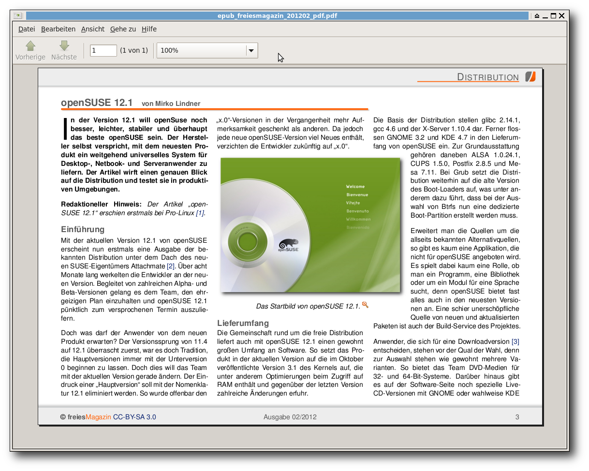freiesMagazin als PDF.
Wandlung von LaTeX
Es gibt theoretisch eine Möglichkeit, wie man von einer LaTeX-Dokument direkt zu einem EPUB kommt: Pandoc [5]. Die Ergebnisse des Programms sind aber (zumindest, was die Konvertierung von freiesMagazin angeht) nicht sehr gut bzw. es funktioniert einfach nicht. Ansonsten gibt es keinen direkten Weg von LaTeX zu einem EPUB. Daher muss zwingend über ein Zwischenformat gearbeitet werden. Hier böte sich PDF an, was heutzutage das „normale“ Endprodukt einer LaTeX-Übersetzung ist. Wie oben geschrieben ist PDF aber ein starres Dateiformat mit festen Seitenzahlen und Umbrüchen. Dies führt bei der Konvertierung meistens zu Problemen. Eines der bekanntesten Programme zur Konvertierung ist Calibre [6]. Dabei ist Calibre selbst eher ein Medienverwaltungsprogramm, welches aber zahlreiche Hilfsmittel und Skripte mitbringt. Eines davon, ebook-convert [7], beherrscht viele Wandlungen, unter anderem auch PDF nach EPUB. Konvertiert man freiesMagazin damit, ist das Ergebnis leider nicht sehr brauchbar. Als Gründe dafür kann man zum einen das starre Layout von PDF, welches seitenbasiert arbeitet nennen, zum anderen macht aber auch die dreispaltige Seitenaufteilung des Dokuments Probleme. Calibre kommt mit solch strukturierten Dokumenten einfach nicht besonders gut zurecht. Konvertiert man beispielsweise das PDF der Septemerausgabe [8] mittels unten stehendem Befehl erhält man Sätze wie „NahezujedeZeit"ßchrift"ünd"Ïnternet"ß"ëi-s"ïnd.Möglich"ïsthier,z.B."öffene(oder"ßchwach übertragen–eingefundenesFres"ßenfür"Ängreite, die sich mit einem PC-nahen The- ver"ßchlüs"ßelte) WLAN-Netze oder auch unverfer.“ Wer das noch lesen kann, ist gut. Ohne eine Anpassung des Layouts geht es also nicht.$ ebook-convert freiesMagazin-2012-09.pdf 09-2012.epub
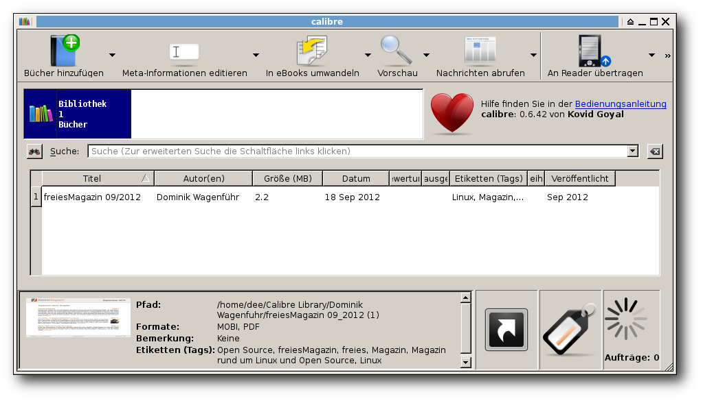Calibre.
Exkurs: Der Aufbau von freiesMagazin
freiesMagazin besteht wie viele andere Projekte auch, aus einer Hauptdatei, welche die verschiedenen Kapitel (d. h. Artikel) per \input einbindet. Damit jede Ausgabe gleich aussieht, gibt es zahlreiche Befehle und Layoutdefinitionen. Diese sind in mehrere Dateien aufgeteilt: befehle.tex, layout.tex und pakete.tex. 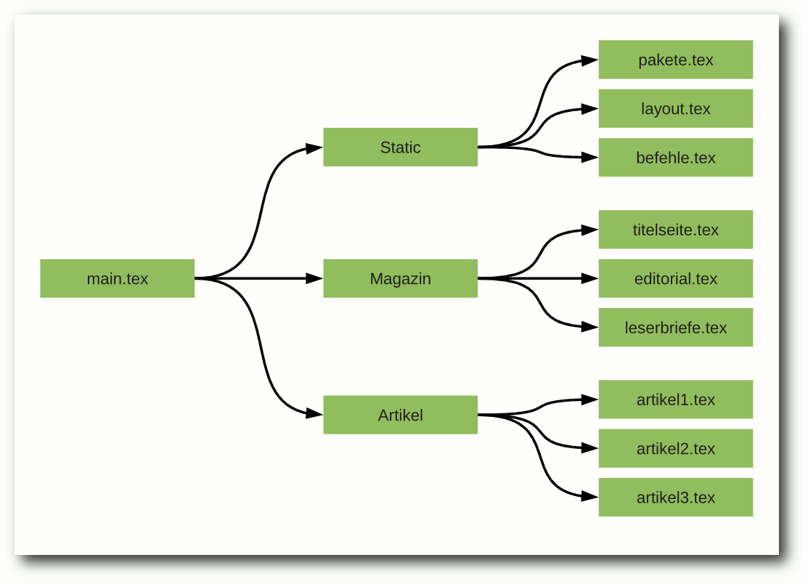Der Dateiaufbau von freiesMagazin.
Die Idee ist nun, die Dateien, welche das Layout und die Darstellung bestimmen, so umzuformen, dass diese eher wie ein Fließtext wirken. Das heißt, im Grundprinzip ersetzt man die drei obigen Dateien durch eine befehle-mobil.tex. Übersetzt man den LaTeX-Code damit, ergibt sich ein optisch nicht schönes, aber doch recht fortlaufend aussehendes Format, welches in etwa an Fließtext erinnert. Eine Wandlung des PDFs mit Calibre zeigt dann auch ein bereits lesbares EPUB, wobei das Aussehen noch etwas kränkelt und Fußzeilen und Seitenzahlen den Lesefluss immer noch unterbrechen. Calibre geht bei der Wandlung eines PDFs wie folgt vor: Es wandelt dieses zuerst in HTML und wandelt dann die HTML-Ausgabe in ein EPUB. Durch die Benutzung von XHTML in den EPUBs, ist der letzte Schritt in der Regel sehr leicht. Die Idee ist also ganz einfach: Man wandelt nicht das starre PDF in EPUB, sondern versucht von LaTeX zu einer HTML-Version zu kommen, die man dann in ein EPUB umwandelt. 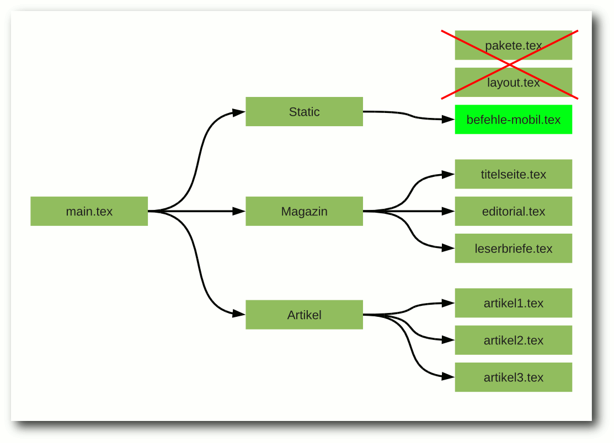
Der Dateiaufbau von freiesMagazin für die HTML-Ausgabe.
Von LaTeX zu HTML
Im Gegensatz zur Wandlung von LaTeX nach EPUB gibt es für die Wandlung von LaTeX nach HTML zahlreiche Programme, die um die Gunst des Nutzers buhlen: TeX4ht [9], Hyperlatex [10], LaTeX2HTML [11], LaTeXML [12], Hevea [13], tth [14] und das oben bereits erwähnte Pandoc [15]. Bis auf Hevea und tth haben alle Konverter große Probleme, überhaupt sinnvolles HTML aus dem LaTeX-Code von freiesMagazin zu machen. Bei anderen LaTeX-Dateien kann dies sicherlich anders aussehen. Diese Einschränkung hat aber dazu geführt, dass man sich 2010 bei der ersten HTML-Erstellung für tth als Konverter entschieden hat (Hevea brachte damals im direkten Vergleich schlechtere Ergebnisse). tth [16] ist aber leider auch fern von optimal und hat zahlreiche Einschränkungen. So versteht es kein \usepackage und kann daher nur den fest eingebauten LaTeX-Sprachschatz verstehen. (Hierbei gibt es aber auch ein Workaround, nämlich die sty-Datei des gewünschten LaTeX-Paketes mit \input zu inkludieren.) Dies führt dazu, dass man an der befehle-mobil.tex zahlreiche Anpassungen vornehmen muss, ehe tth den LaTeX-Code versteht:- keine Kopf- oder Fußzeile
- einspaltiges Layout
- alle Längenberechnungen entfernen
- keine Spalten- oder Seitenumbrüche
- „normale“ Positionierung von Bildern
- einige Sonderzeichen (\ ~ - ) maskieren
- kein \ifthenelse
- keine optionalen Argumente
- Artikelüberschriften als \chapter
- keine Listings (Paket listings)
- nur Standardtabellenformat
- keine absolute Positionierung (Paket textpos)
- unnötige Umbrüche entfernen
- doppelte Absatzabstände entfernen
- maskierte Sonderzeichen zurückwandeln (siehe oben)
- echte Anführungszeichen setzen: „…“ anstatt „…"
- Tabellenlayout korrigieren (feste Breite raus, einfacher Rahmen)
- Bildergröße mittels style=max-width:100%; anpassen
- Meta-Daten (Titel, Herausgeber, etc.) des Dokuments setzen
- befehle-mobil.tex in die Hauptdatei eintragen und andere Dateien entfernen
- LaTeX-Code gesondert aufbereiten (hauptsächlich wegen Listings)
- tth laufen lassen
- HTML-Code nachbereiten (siehe oben)
freiesMagazin als HTML.
Wandlung von HTML
Für die Wandlung des HTML-Dokuments nach EPUB kann man, wie oben bereits erwähnt, Calibre nutzen. Durch den Konsolenbefehl ebook-convert [18] geht die Wandlung sogar automatisiert. Leider zeigt Calibre ein paar unschöne Eigenheiten. So wird der Abstand zwischen Absätzen nicht eingehalten, das CSS der Tabellen wird ignoriert und bei jeder Überschrift beginnt automatisch eine neue Seite. Zu guter Letzt fehlen im Inhaltsverzeichnis einige Kapitel. Durch Optionen lassen sich einige Unschönheiten sicherlich ausbessern, nur sollte nicht zu viel Zeit in die Einarbeitung in Calibre investiert werden. Ein anderer Weg zur Wandlung wäre das bereits oben erwähnte Pandoc [19], welches als Zielformat auch EPUB beherrscht. Die Ergebnisse des Konverters sind recht gut, dennoch gibt es ähnlich wie bei Calibre einige unschöne Eigenschaften, vor allem was den Einsatz von CSS angeht, sodass auch Pandoc nicht zum gewünschten Ziel führt. Aus dem Grund wird bei freiesMagazin das Programm Sigil [20] eingesetzt. Dies ist ein Konvertierprogramm von HTML nach EPUB, welches sehr gute Ergebnisse erzielt. Für die automatische Verarbeitung der Daten existiert eine inoffizielle Konsolenversion. Damit diese für freiesMagazin genau das tut, was sie soll, musste Sigil im Quellcode an einigen wenigen Stellen angepasst werden. So wird die HTML-Datei nicht konvertiert, sondern die Artikel werden getrennt, sodass jeder Artikel auf einer neuen Seite anfängt, und es wird ein Inhaltsverzeichnis erstellt. Der Befehl$ sigil ~/freiesMagazin-2012-09.html ~/freiesMagazin-2012-09.epub
erzeugt dann (im Groben) die EPUB-Datei.
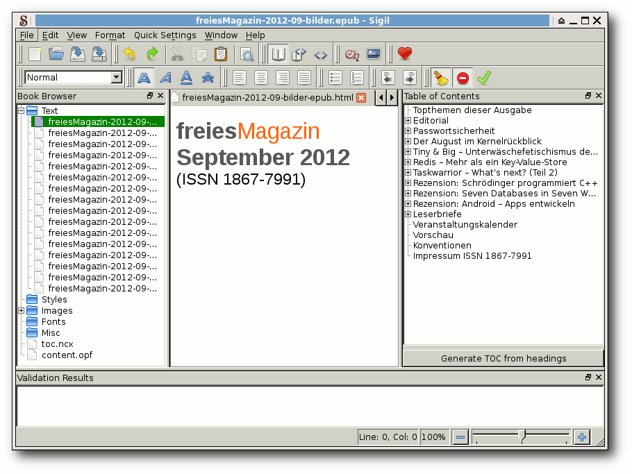Sigil.
Aber auch hier geht es leider nicht wieder ohne Anpassungen, damit das erzeugte EPUB ordentlich aussieht. So wird vor der Konvertierung das Inhaltsverzeichnis aus der HTML-Version entfernt, da die E-Book-Reader ein eigenes Inhaltsverzeichnis haben. Daneben erhalten die Artikel bestimmte Trennmarken am Beginn, damit jeder Artikel auf einer neuen Seite beginnt (siehe oben). Und zuletzt wird noch eine spezielle Titelseite erstellt, sodass in der Vorschau der E-Book-Reader zu sehen ist, um welche Ausgabe es sich handelt. 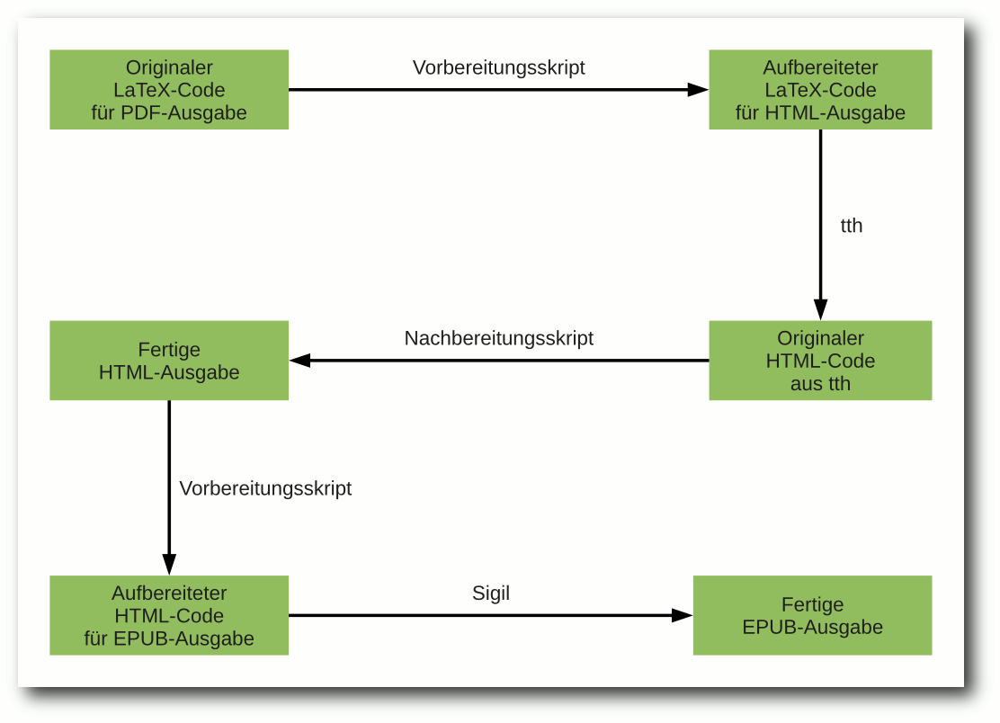
Vom LaTeX-Code über HTML zum EPUB.
Prüfung des erstellten EPUB
E-Book-Reader sind bei der Interpretation des XHTML-Inhaltes nicht ganz so großzügig wie normale Webbrowser und verhalten sich mitunter sehr unfreundlich, d.h. sie reagieren mit Abstürzen, wenn das EPUB nicht ganz der Norm entspricht. Aus diesem Grund ist es sinnvoll, das EPUB nach der Erstellung zu überprüfen. Wer bereits Sigil einsetzt, kann dieses benutzen, um die Validierung durchzuführen. Dafür startet man Sigil, öffnet das EPUB und wählt dann unter „File -> Validate Epub“. Im unteren Teil des Fensters sieht man dann die diversen Warnungen und Fehler.Durch einen Doppelklick kann man auch an die fehlerhafte Stelle springen. 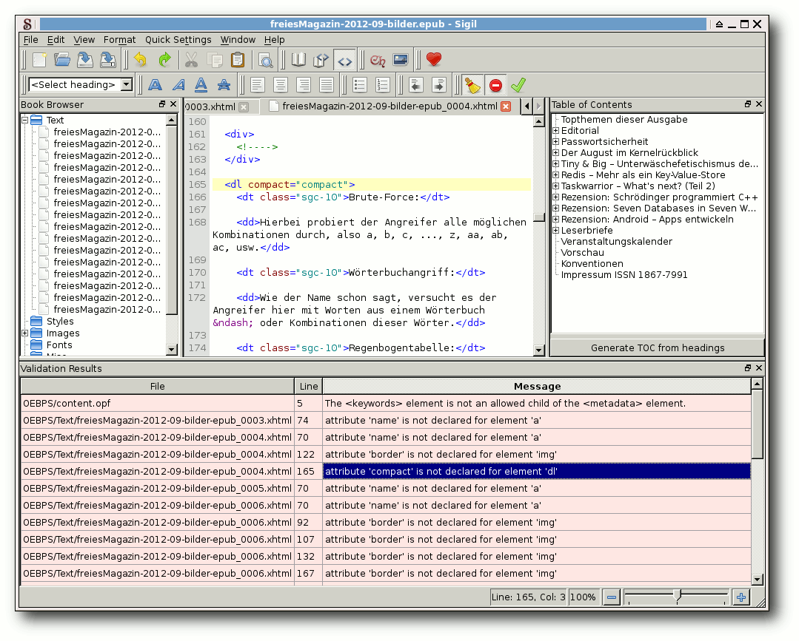Sigil validiert auch EPUBs.
Eine zweite Möglichkeit zur EPUB-Validierung ist das freie Java-basierende Programm EpubCheck [21]. Man ruft das Programm im Terminal mit dem zu prüfende EPUB als Argument auf:
$ java -jar epubcheck-3.0b5.jar freiesMagazin-2012-09-bilder.epub
Epubcheck Version 3.0b5
Validating against EPUB version 2.0
ERROR: freiesMagazin-2012-09-bilder.epub/OEBPS/content.opf(5,18): element "dc:keywords" not allowed anywhere
ERROR: freiesMagazin-2012-09-bilder.epub/OEBPS/Text/freiesMagazin-2012-09-bilder-epub_0003.xhtml(74,51): attribute "name" not allowed here
ERROR: freiesMagazin-2012-09-bilder.epub/OEBPS/Text/freiesMagazin-2012-09-bilder-epub_0004.xhtml(165,25): attribute "compact" not allowed here
...
Epubcheck Version 3.0b5
Validating against EPUB version 2.0
ERROR: freiesMagazin-2012-09-bilder.epub/OEBPS/content.opf(5,18): element "dc:keywords" not allowed anywhere
ERROR: freiesMagazin-2012-09-bilder.epub/OEBPS/Text/freiesMagazin-2012-09-bilder-epub_0003.xhtml(74,51): attribute "name" not allowed here
ERROR: freiesMagazin-2012-09-bilder.epub/OEBPS/Text/freiesMagazin-2012-09-bilder-epub_0004.xhtml(165,25): attribute "compact" not allowed here
...
Fazit
Der Artikel sollte zeigen, dass der Weg zu einem eigenen EPUB, egal ob man LaTeX oder HTML als Quelle hat, vielleicht nicht immer ganz einfach ist, man aber in der Regel mit vertretbaren Aufwand auch gute Ergebnisse erzielen kann. 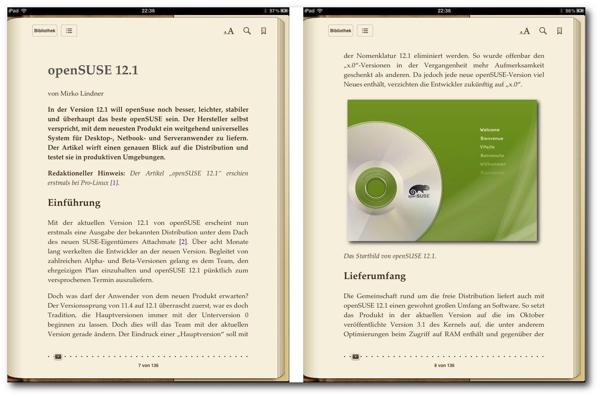freiesMagazin als EPUB.
Links
[1] https://de.wikipedia.org/wiki/E-Book
[2] https://de.wikipedia.org/wiki/EPUB
[3] https://de.wikipedia.org/wiki/Amazon_Kindle
[4] https://de.wikipedia.org/wiki/Mobipocket
[5] http://johnmacfarlane.net/pandoc/
[6] http://calibre-ebook.com/
[7] http://manual.calibre-ebook.com/cli/ebook-convert.html
[8] http://www.freiesmagazin.de/freiesMagazin-2012-09
[9] http://www.tug.org/applications/tex4ht/
[10] http://hyperlatex.sourceforge.net/
[11] http://www.latex2html.org/
[12] http://dlmf.nist.gov/LaTeXML/
[13] http://para.inria.fr/~maranget/hevea/
[14] http://silas.psfc.mit.edu/tth/
[15] http://johnmacfarlane.net/pandoc/
[16] http://silas.psfc.mit.edu/tth/
[17] http://validator.w3.org/
[18] http://manual.calibre-ebook.com/cli/ebook-convert.html
[19] http://johnmacfarlane.net/pandoc/
[20] https://code.google.com/p/sigil/
[21] http://code.google.com/p/epubcheck/
| Autoreninformation |
| Dominik Wagenführ (Webseite) ist Chefredakteur bei freiesMagazin und kümmert sich unter anderem auch um die Konvertierungen von LaTeX in das HTML- und EPUB-Format – und das, obwohl er selbst kein mobiles Lesegrät besitzt. |
Diesen Artikel kommentieren
Zum Index
Wayland: Der König ist tot – es lebe der König
von Martin Gräßlin Knapp eine Woche vor dem Ende des Oktobers erschien die Version 1.0 von Wayland [1]. Das System gilt als möglicher Nachfolger des in die Jahre gekommenen X-Servers. Dieser kurze Artikel soll die neue Version etwas näher beleuchten.Es war einmal …
In freiesMagazin 08/2011 [2] wurde die X-Architektur bereits ausführlich beleuchtet. Mittlerweile ist sie über 25 Jahre alt und kaum noch den Anforderungen moderner Systeme, insbesondere von Embedded Devices, gewachsen. So ist es wenig überraschend, dass weder Google in ihrem Android, noch HP/Palm in ihrem WebOS auf den X-Server setzen, sondern andere Ansätze wählten. Insbesondere für Systeme mit Compositing stellt die X-Architektur heutzutage ein erhebliches Hindernis dar. Sie funktioniert zwar, aber enthält doch viele Hacks und Einschränkungen, die durch die grundlegenden „Fehler“ der Architektur bedingt sind. In vielen Bereichen arbeiten die Toolkits (z. B. Gtk+, Qt) und die Compositoren (z. B. KWin, Mutter, Compiz) an X vorbei. Beispielweise wird die kommende Version Qt 5 nicht mehr die Möglichkeit besitzen, über den X-Server zu zeichnen. Dies wird entweder über die hardwarenahe OpenGL-Schnittstelle oder über die eigenen Zeichenalgorithmen geschehen. Ein großer Teil des X-Servers wird somit direkt übergangen. Das Ergebnis der Zeichenoperationen muss nun aber immer noch über das X-Protokoll an den X-Server übertragen werden, von dort an den Compositor, welcher die Szene aller Fenster zusammensetzt und mittels OpenGL zeichnet. Das Ergebnis wird erneut an den X-Server übertragen und von dort an den Linux Kernel (KMS [3]) weitergeleitet. Betrachtet man dies, so stellt man fest, dass der X-Server nicht viel mehr ist als ein Proxy Server, um Daten zwischen verschiedenen Parteien zu verteilen. Nur war er dafür nie ausgelegt oder gedacht.Der „Thronfolger“
Hier soll nun Wayland als Lösungsansatz mit den Problemen aufräumen. Die Idee ist, die Funktionalität des X-Servers in den Compositor zu schieben, sodass die Anwendungen ihre Zeichenergebnisse (genannt „Buffer“) direkt an den Compositor geben können, welcher diese nun mit OpenGL zeichnet und an den Kernel weitergibt. Potentielle Nachfolger für X11 gab es schon viele, doch hat sich bislang keiner durchsetzen können. Bei Wayland ist sich die Entwickler-Community einig, dass dies anders sein wird. Einer der Aspekte ist dabei, dass Wayland gar nicht versucht, X zu ersetzen – es ist mehr ein „mit X zusammen“ als ein „gegen X“. Die Entwicklung an Wayland, welche von Kristian Hogsberg initiiert wurde, wird innerhalb der X-Entwickler-Community durchgeführt. So ist es wenig überraschend, dass auf der diesjährigen X Developer Conference (XDC) Wayland ein Schwerpunkt war [4] und die Xorg Foundation die Unterstützung von Wayland neben dem X Window System zu ihrem offiziellen Aufgabenbereich erklärt hat. Auch bei der Entwicklung selbst zeigt sich das Nebeneinander von X11 und Wayland bereits sehr gut. Durch die XWayland-Erweiterung des X-Servers [5], welche für die nächste Veröffentlichung des X-Servers geplant ist, kann ein Wayland Compositor den Fensterinhalt einer X-Anwendung als Wayland-Buffer erhalten und sich gleichzeitig wie ein normaler X11-Fenstermanager mit den Fenstern unterhalten.Wayland, der Erste
Die nun erfolgte Veröffentlichung von Wayland 1.0 stellt einen sehr wichtigen Meilenstein auf dem Weg zu einem Wayland-System dar. Es bedeutet jedoch nicht, dass Anwender nun Wayland nutzen können – dies ist nicht das Ziel der Veröffentlichung. Primär geht es darum, das Protokoll von Wayland (ähnlich wie X11) zu stabilisieren und in Zukunft abwärtskompatibel zu sein. Das ist hauptsächlich für Entwickler interessant. Die Entwickler von Toolkits können die Anpassungen für Wayland vornehmen, ohne von ständigen API-Änderungen überrascht zu werden. Auch die Entwickler der Compositoren können nun anfangen, Wayland-Unterstützung einzubauen. Bis Wayland bei den Anwendern aufschlägt, wird noch einige Zeit vergehen, und es wäre gewagt, Prognosen abzugeben. Hier darf man sich auch gerne daran erinnern, dass Mark Shuttleworth bereits vor zwei Jahren Wayland für Ubuntu innerhalb von zwölf Monaten angekündigt hatte [6]. Im Idealfall werden Anwender auch nichts von der Umstellung merken. Wer dennoch schon mit Wayland spielen will, kann dazu die Referenz-Implementierung eines Wayland-Compositors Weston und einige Demo-Anwendungen in den Paketquellen finden. Jedoch ist die XWayland-Erweiterung noch nicht in den X-Servern aktueller Distributionen enthalten. Links[1] http://wayland.freedesktop.org/
[2] http://www.freiesmagazin.de/freiesMagazin-2011-08
[3] https://en.wikipedia.org/wiki/Mode_setting
[4] http://www.x.org/wiki/Events/XDC2012
[5] http://wayland.freedesktop.org/xserver.html
[6] http://www.markshuttleworth.com/archives/551
| Autoreninformation |
| Martin Gräßlin (Webseite) ist Maintainer des Compositors der KDE Plasma Workspaces und arbeitet an der Portierung nach Wayland. |
Diesen Artikel kommentieren
Zum Index
Taskwarrior – What's next? (Teil 4)
von Dirk Deimeke Taskwarrior [1] ist eine Aufgabenverwaltung für die Kommandozeile. Von einfachen ToDo-Listen bis hin zum Management kleinerer Projekte wird alles durch diese Anwendung abgedeckt. Achtung: In alten Versionen von Taskwarrior steckte ein hässlicher Fehler, der bei Verwendung des Kommandos task merge (bisher noch nicht in dieser Reihe behandelt) zu Datenverlust führen konnte. Das ist der schwerste Fehler, den Taskwarrior bis jetzt hatte. Es wird dringend empfohlen, auf die aktuelle Version 2.1.2 [2] [3] (oder neuer) zu aktualisieren oder das Kommando nicht einzusetzen. In der August-Ausgabe von freiesMagazin [4] wurde die Installation von Taskwarrior und die drei Kommandos add, ls und done erklärt. Im September [5] folgten dann die Befehle delete, undo, modify, config, show und die Attribute priority, project, sowie die Filterung von Aktionen. Fehlt noch der Oktober [6], in dem der generelle Aufbau eines Taskwarrior-Kommandos behandelt wurde und begonnen wurde, Zeiten einzuführen. Dazu wurden die Datumsformate erklärt und die Attribute due, wait, scheduled und until sowie die Kommandos start und stop. Um sich die Daten anzeigen zu lassen, wurden die Reports list und waiting erwähnt. Die meisten Ausgaben von Taskwarrior sind farbig. Es lohnt sich, die Beispiele nachzuvollziehen, um in den Genuss von „bunt” zu kommen. :-)Wiederkehrende Aufgaben
Ein Feature, das eine moderne Aufgabenverwaltung bieten muss, sind wiederkehrende Aufgaben. Darunter werden Aufgaben verstanden, die in regelmäßigen Abständen zu erledigen sind. Ein Beispiel könnte das Überweisen der Miete an den Vermieter sein (sofern man keinen Dauerauftrag eingerichtet hat). Das folgende Kommando leistet das Gewollte:$ task add due:eom recur:monthly "Miete bezahlen"
Created task 1.
$ task list
ID Project Pri Due Active Age Description
2 20121031 - Miete bezahlen
1 task
Das ist verwirrend, oder? Eine Aufgabe mit der ID 1 scheint nicht zu
existieren.
Wenn eine wiederkehrende Aufgabe angelegt wird, werden zwei Aufgaben
erstellt. Eine, die die „Meta-Informationen” über die wiederkehrende
Aufgabe enthält, und eine Aufgabe, die erledigt werden soll.
Created task 1.
$ task list
ID Project Pri Due Active Age Description
2 20121031 - Miete bezahlen
1 task
$ task 1,2 information
Name Value
ID 1
Description Miete bezahlen
Status Recurring
Recurrence monthly
Mask -
Due 20121031
UUID 47c026d4-0d93-4344-8cb7-1e03c57738ce
Entered 20121022 (37 secs)
Urgency 4.8
Date Modification
20121022 Mask set to
'-'.
Name Value
ID 2
Description Miete bezahlen
Status Pending
Recurrence monthly
Parent task 47c026d4-0d93-4344-8cb7-1e03c57738ce
Mask Index 0
Due 20121031
UUID cdf1ad91-debd-499f-8c8e-87f2b238d7bd
Entered 20121022 (31 secs)
Urgency 4.8
Hier ist deutlich sichtbar, dass die Aufgabe mit der ID 1 den Status
Recurring hat.
Sie ist also die Mutteraufgabe und die Aufgabe mit
der ID 2 ist die, die erledigt werden soll.
Das Feld Parent
task zeigt an, von welcher Elternaufgabe sie abstammt.
Wenn man eine wiederkehrende Aufgabe löschen möchte, muss man vor
allem die Elternaufgabe löschen, sonst erscheint eine neue
Inkarnation nach jedem Wiederholungsinterval aufs Neue.
Name Value
ID 1
Description Miete bezahlen
Status Recurring
Recurrence monthly
Mask -
Due 20121031
UUID 47c026d4-0d93-4344-8cb7-1e03c57738ce
Entered 20121022 (37 secs)
Urgency 4.8
Date Modification
20121022 Mask set to
'-'.
Name Value
ID 2
Description Miete bezahlen
Status Pending
Recurrence monthly
Parent task 47c026d4-0d93-4344-8cb7-1e03c57738ce
Mask Index 0
Due 20121031
UUID cdf1ad91-debd-499f-8c8e-87f2b238d7bd
Entered 20121022 (31 secs)
Urgency 4.8
Wiederholungsintervalle
Taskwarrior unterstützt einige Möglichkeiten, Wiederholungsintervalle zu spezifizieren.| Wiederholungsintervalle | |
| daily, day, 1da, 2da, … | Täglich oder alle 1/2/… Tage |
| weekdays | Wochentäglich, nicht an Samstagen oder Sonntagen |
| weekly, 1wk, 2wks, … | Wöchentlich oder alle 1/2/… Wochen |
| biweekly, fortnight | Alle zwei Wochen |
| monthly, month, 1mo, 2mo, … | Monatlich oder alle 1/2/… Monate |
| quarterly, 1qtr, 2qtrs, … | Vierteljährlich oder alle 1/2/… Quartale |
| semiannual | Alle zwei Jahre |
| annual, yearly, 1yr, 2yrs, … | Jährlich oder alle 1/2/… Jahre |
| biannual, biyearly, 2yrs | Alle zwei Jahre |
Endtermin für Wiederholungen setzen
Statt, wie im ersten Abschnitt beschrieben, eine wiederkehrende Aufgabe zu löschen, kann man ihr auch gleich zu Beginn mitgeben, wie oft sie wiederholt werden soll.$ task add due:eom recur:monthly until:20131231 "Kreditrate bezahlen"
Created task 3.
$ task list
ID Project Pri Due Active Age Description
2 20121031 18s Miete bezahlen
4 20121031 - Kreditrate bezahlen
2 tasks
$ task 2,4 done
Completed task 2 'Miete bezahlen'.
Completed task 4 'Kreditrate bezahlen'.
Completed 2 tasks.
$ task list
No matches.
Diese Aufgabe wird jeden Monat wiederholt, so lange bis der 31.12.2013 erreicht ist.
Da diese Aufgaben aber bereits alle erledigt wurde, wird dies auch gleich
entsprechend markiert.
Created task 3.
$ task list
ID Project Pri Due Active Age Description
2 20121031 18s Miete bezahlen
4 20121031 - Kreditrate bezahlen
2 tasks
$ task 2,4 done
Completed task 2 'Miete bezahlen'.
Completed task 4 'Kreditrate bezahlen'.
Completed 2 tasks.
$ task list
No matches.
Abhängigkeiten
Aufgaben können voneinander abhängen. Daher können natürlich auch die Abhängigkeiten in Taskwarrior abgebildet werden.$ task add "Geschenk kaufen"
Created task 3.
$ task add depends:3 "Zur Party gehen"
Created task 4.
Man kann erst zur Party gehen, wenn das Geschenk gekauft wurde.
Aber Achtung:
Created task 3.
$ task add depends:3 "Zur Party gehen"
Created task 4.
$ task 4 done
Completed task 4 'Zur Party gehen'.
Task 4 is blocked by:
3 Geschenk kaufen
Completed 1 task.
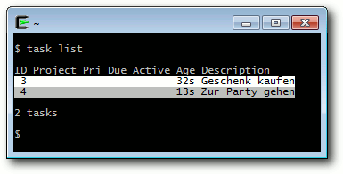Completed task 4 'Zur Party gehen'.
Task 4 is blocked by:
3 Geschenk kaufen
Completed 1 task.
Abhängigkeiten verschiedener Aufgaben.
Es gibt eine Fehlermeldung, wenn man geblockte Aufgaben erledigt, aber sie werden trotzdem als erledigt markiert. Mittels task undo kann diese Änderung rückgängig gemacht werden.
$ task add depends:3,4 "Bericht von der Party schreiben"
Created task 5.
Mehrere Abhängigkeiten sind auch möglich.
Um sich alle geblockten Aufgaben anzeigen zu lassen, kann der Report
blocked verwendet werden. Analog funktioniert dies mit den ungeblockten Aufgaben und dem
Report unblocked.
Er
beinhaltet auch Aufgaben, die „nur” fällig sind und keine Aufgabe
als Kind haben.
Created task 5.
$ task blocked
ID Deps Project Pri Due Active Age Description
4 3 2m Zur Party gehen
5 3 4 20s Bericht von der Party schreiben
2 tasks
$ task unblocked
ID Deps Project Pri Due Active Age Description
3 2m Geschenk kaufen
In der Spalte Deps sind die Abhängigkeiten zu sehen.
Jetzt werden alle Aufgaben erledigt.
ID Deps Project Pri Due Active Age Description
4 3 2m Zur Party gehen
5 3 4 20s Bericht von der Party schreiben
2 tasks
$ task unblocked
ID Deps Project Pri Due Active Age Description
3 2m Geschenk kaufen
$ task 3,4,5 done
- End will be set to '20121022'.
- Status will be changed from 'pending' to 'completed'.
Complete task 3 'Geschenk kaufen'? (yes/no/all/quit) all
Completed task 3 'Geschenk kaufen'.
Unblocked 4 'Zur Party gehen'.
Completed task 4 'Zur Party gehen'.
Unblocked 5 'Bericht von der Party schreiben'.
Completed task 5 'Bericht von der Party schreiben'.
Completed 3 tasks.
Bitte auf die Ausgaben achten. Dort zeigt sich, dass mit dem
Erledigen von Aufgabe 3, Aufgabe 4 „frei” wird und, nachdem Aufgabe 4
erledigt wurde, Aufgabe 5 ebenso frei wird.
- End will be set to '20121022'.
- Status will be changed from 'pending' to 'completed'.
Complete task 3 'Geschenk kaufen'? (yes/no/all/quit) all
Completed task 3 'Geschenk kaufen'.
Unblocked 4 'Zur Party gehen'.
Completed task 4 'Zur Party gehen'.
Unblocked 5 'Bericht von der Party schreiben'.
Completed task 5 'Bericht von der Party schreiben'.
Completed 3 tasks.
Etiketten
Bis jetzt wurden nur Projekte und Subprojekte als Ordnungsmöglichkeiten für Aufgaben benutzt. Etiketten oder neudeutsch „Tags” können aber ebenfalls in Taskwarrior verwendet werden. Ein Tag wird mit +name zu einer Aufgabe hinzugefügt. Entsprechend kann man den Tag mit -name wieder entfernen, wie unten gezeigt.$ task add +home "Staubsaugen"
Created task 6.
$ task add +work "Urlaub einreichen"
Created task 7.
$ task add +home +phone "Versicherungsagenten anrufen"
Created task 8.
$ task long
ID Project Pri Added Started Due Recur Countdown Age Deps Tags Description
3 20121022 - 17s home Staubsaugen
4 20121022 - 7s work Urlaub einreichen
5 20121022 - 2s home phone Versicherungsagenten anrufen
3 tasks
$ task +home long
ID Project Pri Added Started Due Recur Countdown Age Deps Tags Description
3 20121022 - 27s home Staubsaugen
5 20121022 - 12s home phone Versicherungsagenten anrufen
2 tasks
Die Vergabe der Namen von Etiketten und die Verwendung sind völlig
frei. Wie der letzte Bericht zeigt, lässt sich die Ausgabe auch nach
den Etiketten filtern.
Created task 6.
$ task add +work "Urlaub einreichen"
Created task 7.
$ task add +home +phone "Versicherungsagenten anrufen"
Created task 8.
$ task long
ID Project Pri Added Started Due Recur Countdown Age Deps Tags Description
3 20121022 - 17s home Staubsaugen
4 20121022 - 7s work Urlaub einreichen
5 20121022 - 2s home phone Versicherungsagenten anrufen
3 tasks
$ task +home long
ID Project Pri Added Started Due Recur Countdown Age Deps Tags Description
3 20121022 - 27s home Staubsaugen
5 20121022 - 12s home phone Versicherungsagenten anrufen
2 tasks
$ task 5 mod -home
Modifying task 5 'Versicherungsagenten anrufen'.
Modified 1 task.
Um den Versicherungsagenten anzurufen, muss man nicht unbedingt zu
Hause sein, sondern kann dies auch von unterwegs erledigen.
Modifying task 5 'Versicherungsagenten anrufen'.
Modified 1 task.
Reports
Die in Taskwarrior definierten Reports, auch die eigenen, lassen sich durch Eingabe von task reports ausgeben.$ task reports
Report Description
active Lists active tasks
all Lists all pending and completed tasks
blocked Lists all blocked tasks
burndown.daily Shows a graphical burndown chart, by day
burndown.monthly Shows a graphical burndown chart, by month
burndown.weekly Shows a graphical burndown chart, by week
completed Lists completed tasks
ghistory.annual Shows a graphical report of task history, by year
ghistory.monthly Shows a graphical report of task history, by month
history.annual Shows a report of task history, by year
history.monthly Shows a report of task history, by month
information Shows all data and metadata
list Lists all pending tasks
long Lists all pending tasks
ls Minimal listing of all pending tasks
minimal Minimal listing of all pending tasks
newest Shows the newest tasks
next Lists the most urgent tasks
oldest Shows the oldest tasks
overdue Lists overdue tasks
projects Shows all project names used
ready Lists the most urgent tasks
recurring Lists recurring tasks
summary Shows a report of task status by project
tags Shows a list of all tags used
unblocked Lists all unblocked tasks
waiting Lists all waiting tasks
27 reports
Eine Reihe von Reports konnte man schon kennen lernen, die meisten
beziehen sich direkt auf Aufgaben.
Es gibt aber auch spezielle
Reports, wie beispielsweise burndown, history und ghistory,
die andere Ausgaben haben. Diese werden am Ende des Artikels
besprochen.
Ebenfalls häufig genutzt sind die
Reports projects und tags, die eine Liste der
aktiven Projekte und Etiketten zeigen.
Die Definition eines auf bestimmte Aufgaben bezogenen Reports lässt sich mit task
show report.name anzeigen.
Report Description
active Lists active tasks
all Lists all pending and completed tasks
blocked Lists all blocked tasks
burndown.daily Shows a graphical burndown chart, by day
burndown.monthly Shows a graphical burndown chart, by month
burndown.weekly Shows a graphical burndown chart, by week
completed Lists completed tasks
ghistory.annual Shows a graphical report of task history, by year
ghistory.monthly Shows a graphical report of task history, by month
history.annual Shows a report of task history, by year
history.monthly Shows a report of task history, by month
information Shows all data and metadata
list Lists all pending tasks
long Lists all pending tasks
ls Minimal listing of all pending tasks
minimal Minimal listing of all pending tasks
newest Shows the newest tasks
next Lists the most urgent tasks
oldest Shows the oldest tasks
overdue Lists overdue tasks
projects Shows all project names used
ready Lists the most urgent tasks
recurring Lists recurring tasks
summary Shows a report of task status by project
tags Shows a list of all tags used
unblocked Lists all unblocked tasks
waiting Lists all waiting tasks
27 reports
$ task show report.ls
Config Variable Value
report.ls.columns id,project,priority,description
report.ls.description Minimal listing of all pending tasks
report.ls.filter status:pending
report.ls.labels ID,Project,Pri,Description
report.ls.sort priority-,project+
Dabei kommen den einzelnen Konfigurationsoptionen die folgenden
Bedeutungen zu.
Config Variable Value
report.ls.columns id,project,priority,description
report.ls.description Minimal listing of all pending tasks
report.ls.filter status:pending
report.ls.labels ID,Project,Pri,Description
report.ls.sort priority-,project+
Spalten und Spaltenköpfe
In columns finden sich die Spalten, die im Report erscheinen sollen. Mit labels kann man die Spalten benennen. Der Befehl columns gibt die verschiedenen Spalten aus und welche Formate verwendet werden können. Die folgende Ausgabe ist gekürzt, um den Rahmen des Artikels nicht über alle Maßen zu verlängern.Columns Supported Formats Example
bg default* 'on red'
depends list* 1 2 10
count [3]
indicator D
...
wait formatted* 20121022
julian 2456222.87824
epoch 1350896680
iso 20121022T090440Z
age 2m
bg default* 'on red'
depends list* 1 2 10
count [3]
indicator D
...
wait formatted* 20121022
julian 2456222.87824
epoch 1350896680
iso 20121022T090440Z
age 2m
Beschreibung
Mit description kann eine aussagekräftige Beschreibung des kompletten Reports gegeben werden. Diese Beschreibung erscheint auch in der Ausgabe von task reports.Filter
Der Parameter filter definiert einen Ausgabefilter. Bei einem großen Teil der Reports sind bereits verschiedene Filter gesetzt. Um die Kombination verschiedener Filter wird es in der nächsten Ausgabe des Workshops gehen.$ task show filter
Config Variable Value
report.active.filter status:pending start.any:
report.all.filter status.not:deleted
report.blocked.filter status:pending depends.any:
report.completed.filter status:completed
report.list.filter status:pending
report.long.filter status:pending
report.ls.filter status:pending
report.minimal.filter status:pending
report.newest.filter status:pending limit:10
report.next.filter status:pending limit:page
report.oldest.filter status:pending limit:10
report.overdue.filter status:pending due.before:now
report.ready.filter status:pending limit:page wait.none: '(scheduled.none: or scheduled.before:now )'
report.recurring.filter status:pending parent.any:
report.unblocked.filter status:pending depends.none:
report.waiting.filter status:waiting
Config Variable Value
report.active.filter status:pending start.any:
report.all.filter status.not:deleted
report.blocked.filter status:pending depends.any:
report.completed.filter status:completed
report.list.filter status:pending
report.long.filter status:pending
report.ls.filter status:pending
report.minimal.filter status:pending
report.newest.filter status:pending limit:10
report.next.filter status:pending limit:page
report.oldest.filter status:pending limit:10
report.overdue.filter status:pending due.before:now
report.ready.filter status:pending limit:page wait.none: '(scheduled.none: or scheduled.before:now )'
report.recurring.filter status:pending parent.any:
report.unblocked.filter status:pending depends.none:
report.waiting.filter status:waiting
Sortierung
Der Parameter sort legt eine Sortierreihenfolge fest. Dazu wird der Spaltennahme verwendet und eine Reihenfolge, in der sortiert werden soll.Ein Beispiel
Der unten stehende Report ll ist bei mir im Einsatz. Er zeigt die Verwendung der Spalte Countdown, um die verbleibende Zeit bis zum Stichzeitpunkt der Aufgabe darzustellen.$ task config report.ll.columns id,project,priority,due,due.countdown,tags,description
$ task config report.ll.description "Dirks task list"
$ task config report.ll.filter status:pending
$ task config report.ll.labels ID,Project,Pri,Due,Countdown,Tags,Description
$ task config report.ll.sort due+,priority-,project+,description+
$ task ll
ID Project Pri Due Countdown Tags Description
3 home Staubsaugen
4 work Urlaub einreichen
5 phone Versicherungsagenten anrufen
3 tasks
$ task config report.ll.description "Dirks task list"
$ task config report.ll.filter status:pending
$ task config report.ll.labels ID,Project,Pri,Due,Countdown,Tags,Description
$ task config report.ll.sort due+,priority-,project+,description+
$ task ll
ID Project Pri Due Countdown Tags Description
3 home Staubsaugen
4 work Urlaub einreichen
5 phone Versicherungsagenten anrufen
3 tasks
Dringlichkeit
In den Reports taucht immer wieder der Begriff urgency (Dringlichkeit) auf. So sorgt beispielsweise der Report next dafür, dass die Aufgaben angezeigt werden, die am dringlichsten zu erledigen sind.$ task show report.next
Config Variable Value
report.next.columns id,project,priority,due,start.active,entry.age,urgency,description
report.next.description Lists the most urgent tasks
report.next.filter status:pending limit:page
report.next.labels ID,Project,Pri,Due,A,Age,Urgency,Description
report.next.sort urgency-,due+,priority-,start-,project+
Die Berechnungsformel für die Dringlichkeit ist sehr komplex und
würde den Rahmen dieses Artikels sprengen.
Daher an dieser Stelle nur
so viel, dass die Dringlichkeit durch Verändern der folgenden
Variablen beeinflusst werden kann. Höhere Werte bedeuteten
„dringender“, negative Werte drehen das Verhalten um.
Config Variable Value
report.next.columns id,project,priority,due,start.active,entry.age,urgency,description
report.next.description Lists the most urgent tasks
report.next.filter status:pending limit:page
report.next.labels ID,Project,Pri,Due,A,Age,Urgency,Description
report.next.sort urgency-,due+,priority-,start-,project+
$ task show urgency
Config Variable Value
urgency.active.coefficient 4.0
urgency.age.coefficient 2.0
urgency.age.max 365
urgency.annotations.coefficient 1.0
urgency.blocked.coefficient -5.0
urgency.blocking.coefficient 8.0
urgency.due.coefficient 12.0
urgency.next.coefficient 15.0
urgency.priority.coefficient 6.0
urgency.project.coefficient 1.0
urgency.scheduled.coefficient 5.0
urgency.tags.coefficient 1.0
urgency.waiting.coefficient -3.0
Genau nachlesen lässt sich die Verwendung auf der Webseite zu
next [7]
und dem RFC zu Urgency [8].
Config Variable Value
urgency.active.coefficient 4.0
urgency.age.coefficient 2.0
urgency.age.max 365
urgency.annotations.coefficient 1.0
urgency.blocked.coefficient -5.0
urgency.blocking.coefficient 8.0
urgency.due.coefficient 12.0
urgency.next.coefficient 15.0
urgency.priority.coefficient 6.0
urgency.project.coefficient 1.0
urgency.scheduled.coefficient 5.0
urgency.tags.coefficient 1.0
urgency.waiting.coefficient -3.0
Spezielle Reports
burndown
Die Burndown-Reports gibt es in den Varianten daily, weekly und monthly. Sie zeigen den Aufgabenverlauf auf Tagen, Wochen- bzw. Monatsbasis und bieten eine Prognose, wann alle Aufgaben abgearbeitet sein werden. 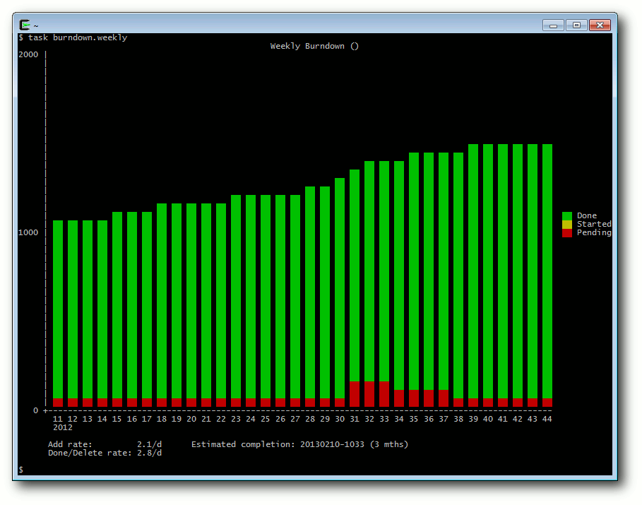Aufgaben aufgeschlüsselt nach Tages-, Wochen- und Monatsbasis.
history
Die history-Reports monthly und annual geben eine Zusammenfassung der Aufgaben der vergangenen Monate oder Jahre. 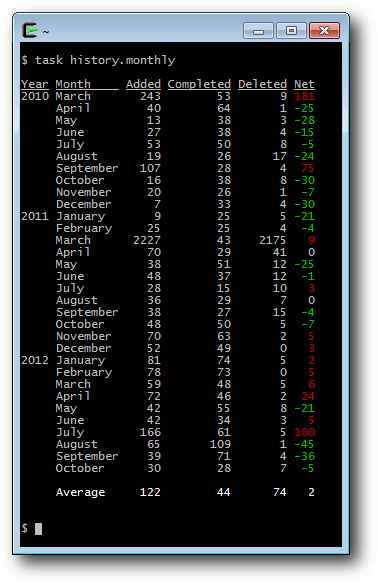Überblick über die Aufgaben der vergangenen Monate.
ghistory
Der ghistory-Report funktioniert analog zu history, bereitet die Daten aber grafisch auf. 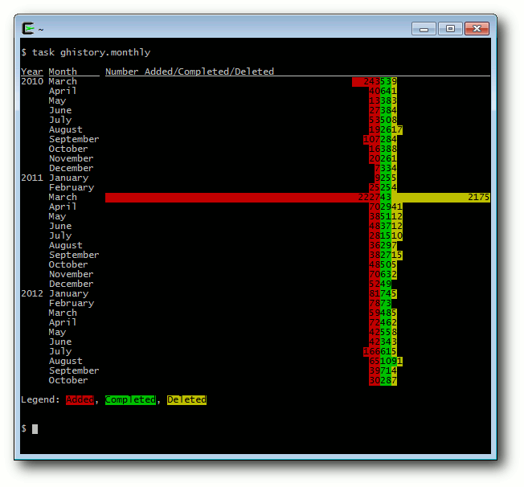Grafischer Überblick über die Aufgaben der vergangenen Monate.
all
Der Report all nimmt eine Sonderstellung ein, da er (fast) ungefiltert alle Aufgaben anzeigt. Gerade vor großflächigen Änderungen ist es wichtig, einmal zu prüfen, welche Aufgaben von einer großen Anzahl von Änderungen betroffen sind. Alle Aufgaben des Projektes projekt auf erledigt setzt ein task pro:projekt done, auch die wartenden. Wenn man sich die anstehenden Aufgaben mittels list, ls oder anderen Reports anzeigt, ist meist ein Filter auf status:pending gesetzt.Ausblick
Das waren jetzt im Schnelldurchgang sehr viele Informationen. Ein Großteil der Funktionen wurde in dieser Workshop-Serie bereits angesprochen. In der nächsten Folge wird es darum gehen, Wissen zu konsolidieren und stärker auf die Filterung, insbesondere die erweiterte Filterung, von Aufgaben einzugehen. Je nachdem wie viel Raum das einnimmt, wird es zudem einen Abschnitt über Konfigurationsvariablen und eventuell den Kalender geben. Links[1] http://taskwarrior.org
[2] http://taskwarrior.org/projects/taskwarrior/wiki/Download
[3] http://www.deimeke.net/dirk/blog/index.php?/archives/3110-Taskwarrior-2.1.2-....html
[4] http://www.freiesmagazin.de/20120805-augustausgabe-erschienen
[5] http://www.freiesmagazin.de/20120902-septemberausgabe-erschienen
[6] http://www.freiesmagazin.de/20121007-oktoberausgabe-erschienen
[7] http://taskwarrior.org/projects/taskwarrior/wiki/Feature_next
[8] http://tasktools.org/gitweb/gitweb.cgi?p=rfc.git;a=blob_plain;f=rfc31-urgency.txt;hb=HEAD
| Autoreninformation |
| Dirk Deimeke (Webseite) beschäftigt sich seit 1996 aktiv mit Linux und arbeitet seit einigen Jahren als Systemadministrator und System Engineer für Linux und Unix. In seiner Freizeit engagiert er sich für Open-Source-Software im Projekt Taskwarrior, im Podcast DeimHart und im Blog Dirks Logbuch. |
Diesen Artikel kommentieren
Zum Index
Bericht von der Ubucon 2012
von Vicki Ebeling und Dominik Wagenführ Lange war nicht klar, ob auch dieses Jahr die Ubucon, eine Messe für alle Ubuntu-Nutzer und -Interessierte, stattfinden kann. Erst im Juli wurde der Call for Papers eröffnet [1] und teilte unter anderem mit, dass die Ubucon 2012 [2] Mitte Oktober in Berlin stattfinden soll. Trotz der kurzen Vorlaufzeit wurde ein gutes und interessantes Programm [3] auf die Beine gestellt.Freitag, 19.10.2012
Obwohl die Programmseite [3] es (inzwischen) verschweigt, fand am Freitag bereits ein erstes Treffen statt. So wurden die Räume der Hochschule für Wirtschaft und Technik (HWTK [4]) von zahlreichen freiwilligen Helfern eingerichtet, Getränkekisten geschleppt und die Anmeldung vorbereitet. Der große Ansturm kam zwar nicht, aber es gab doch einige Interessierte, die sich in die Hallen der Hochschule „verirrt“ hatten. Ein Ersthelfer (also ein Helfer, der das erste Mal auf der Ubucon vor Ort war) fragte später, ob der Aufbau immer so chaotisch abläuft. Die Antwort der alten Hasen war darauf nur, dass es noch sie gut lief wie dieses Jahr. Chaotisch war es also wie immer, dennoch wurden die meisten Dinge rechtzeitig erledigt. Belohnt wurden das Engagement der Helfer am Abend in der c-base Berlin [5]. Auch wenn es nichts zu Essen gab, war das tschechische Bier mit Honig oder Blaubeeren einen Versuch wert. Die Führung durch die heiligen Hallen war sehr lustig und interessant von einem c-base-Mitglied organisiert. Dabei lernte man auch, wie schnell man Hunderte von Euro in Strom umwandeln kann. ;)Der Französische Dom in Berlin.
Samstag, 20.10.2012
Am Samstag ging es gleich früh mit einem Vortrag von Dominik Wagenführ zum Thema „Creative Commons“ los (siehe freiesMagazin 10/2011 [6]). Es waren ungefähr zwölf Zuhörer, die aber alle sehr interessiert dabei waren und sich auch an der Diskussion beteiligten. Danach erzählte Martin Gräßlin etwas zu den KDE Plasma Workspaces. Eigentlich wollte er diese am Beispiel von Kubuntu zeigen. Da dieses vom Live-USB-Stick aber den Dienst versagt, musste als Ersatz sein Debian-Entwicklungssystem herhalten. Neben einer kleinen Einführung zu KDE allgemein, gab es zahlreiche Tipps und Tricks zum Umgang mit den KDE Plasma Workspaces. Parallel dazu zeigte Karsten Günther in einem zweistündigen Workshop den Umgang mit Leuchttisch und Dunkelkammer im Bildprogramm Darktable [7]. Als (kosten-)freie Alternative zu Adobe Lightroom oder Corel AfterShot (dessen Weiterentwicklung für Linux nicht gesichert scheint) ist das Projekt für Fotografen, die auch bei der RAW-Entwicklung nicht das Betriebssystem wechseln möchten, durchaus interessant (siehe dazu auch den Artikel „RAW-Bildverarbeitung unter Linux“ in freiesMagazin 10/2012 [6]). In der Mittagspause schlenderten wir durch die Berliner Innenstadt, die sehr schnell von der HWTK aus erreichbar ist. Dabei gab es auch die üblichen Touri-Fotos. Die Reise dauerte etwas länger, sodass wir die Vorträge, die um 13 Uhr begannen, nicht mitnehmen konnten.Die Alte Bibliothek („Kommode“) am Bebelplatz.
Wie im Jahr zuvor (siehe „Bericht von der Ubucon 2011“, freiesMagazin 11/2011 [8]) hielt Dr. Thomas Rose einen Workshop zum Thema „Wie man die Welt verändert (und bei sich selbst anfängt)“. Mit aktiver Teilnahme wollte er den Zuhörern klar machen, was deren persönliche Werte und Ziele sind und dass man diese von Zeit zu Zeit prüfen und überdenken sollte. Prinzipiell war der Vortrag ganz interessant und regte zum Denken an, passte dieses Mal aber nicht so gut wie die Vorträge zum Konfliktmanagement im letzten Jahr. Der Frage „Wozu ist eigentlich der Kernel gut?“ ging Sebastian Bator nach und widmete sich in seinem Vortrag den Grundlagen des Kernels. Er gab den Zuhörern einen Überblick über die Bestandteile eines Linux-Betriebssystems und den Aufbau der Systemverzeichnisse. Im Anschluss war noch reichlich Zeit für einen Erfahrungsaustausch und Was-wäre-wenn-Szenarien. Parallel dazu gab es wieder einen Vortrag von Dominik Wagenführ zum Thema „E-Book-Erstellung aus LaTeX und HTML“ (siehe Artikel in dieser Ausgabe). Aufgrund der thematischen Spezifität waren nur acht Teilnehmer dabei, aber so entstand zumindest eine interessante Diskussion. Vorgestellt wurden vor allem die Tools und der Workflow, wie (bei freiesMagazin) aus einer LaTeX-Datei eine HTML-Seite bzw. ein E-Book wird. Die verschiedenen Ansätze wurden dabei auch mit den Zuhörern diskutiert. 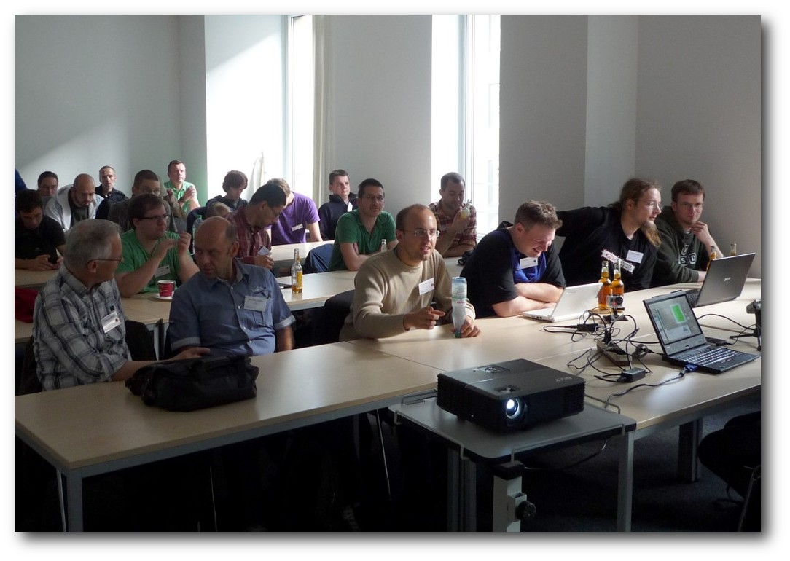
Die Zuhörer warten gespannt auf den nächsten Vortrag.
Zum Abschluss des Abends gab es wie jedes Jahr das Linux-Quiz. Normalerweise wird dieses von Adrian Böhmichen abgehalten, der aber aus privaten Gründen nicht auf der Ubucon sein konnte. Aus dem Grund spielte Dominik Wagenführ den Quizmaster. Es traten immer zwei Teilnehmer gegeneinander an, um ihr Wissen rund um Ubuntu und freie Projekte auf den Prüfstand zu stellen. Als Preis für den Gewinner gab es viele attraktive, gesponserte Buchpreise von Galileo Press [9] und Open Source Press [10]. Die schlagfertigen Antworten der Kandidaten und diverse Einwürfe aus dem Zuschauerraum sorgten auch dieses Mal wieder für kurzweilige Unterhaltung. Der Abend schloss dann mit dem Social Event im Cancún [11], einem lateinamerkianischem Restaurant und Cocktailbar in der Mitte Berlins. Nicht nur das Essen und die Cocktails waren gut, vor allem die Kellnerin hatte den Abend viel Spaß mit uns und wir mit ihr. Bis Mitternacht saßen so ca. 35 Ubucon-Teilnehmer an den Tischen und unterhielten sich.
Sonntag, 21.10.2012
Der Sonntag war etwas von Faulheit geprägt. Die ersten Vorträge um 10 Uhr haben wir wissentlich verschlafen. Und die Vorträge um 11 Uhr haben wir mit interessanten Diskussionen verbracht. Nach der Mittagspause ging es dann etwas ernster mit einem Erfahrungsaustausch zum Thema „Anwendertreffen in Real Life“ weiter. Torsten Franz wollte – als zentraler Ansprechpartner für die deutsche Ubuntu-Community – von den Teilnehmern wissen, welche Erfahrungen sie mit Anwendertreffen gesammelt haben und ob es irgendwo hakt. Das Resultat war ein nettes Gespräch, wo man die verschiedenen Ansätze aus diversen Städten wie Berlin, Wien oder Stuttgart hören konnte. Gleich danach ging es in die nächste Diskussionsrunde zum Thema „Ubucon 2013“. Torsten Franz, der dieses Jahr den Hauptteil der Ubucon allein organisierte, wollte dies nächstes Jahr nicht erneut tun. Es wurden Nachfolger gesucht und auch Orte, die die Ubucon in 2013 veranstalten wollen. Da sich spontan niemand sofort für diesen Posten beworben hat, soll es in Ikhaya [12] demnächst eine Ausschreibung für Orte und Personen geben. Um 15 Uhr gab es dann noch eine kurze Abschlussrede von Torsten Franz, die vielen Brötchen wurden an die restlichen Teilnehmer verteilt und die Räume der HWTK innerhalb einer Stunde wieder so hergerichtet, wie sie ursprünglich aussahen. 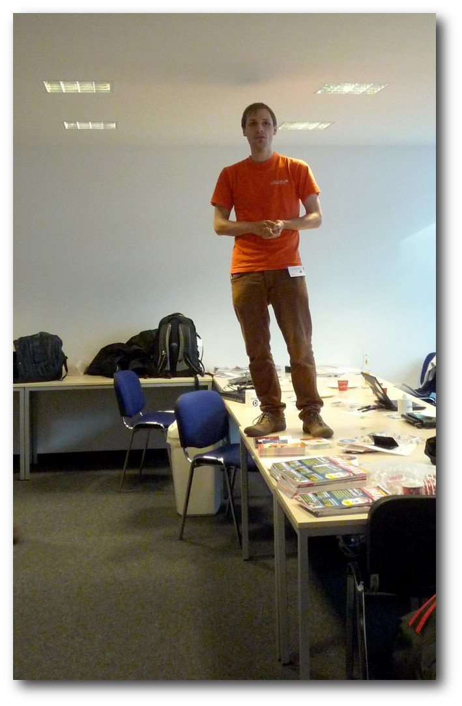Ubucon-Organisator Torsten Franz verabschiedet die Besucher.
Schlussbemerkung
Die Ubucon hat wieder sehr viel Spaß gemacht. Das Programm kam einem vielleicht etwas schwächer vor als letztes Jahr, wenn man aber bedenkt, dass die Vorlaufzeit von Juli bis Oktober nur drei Monate war, ist das Programmangebot ganz gut gewesen. Ein Problem der Ubucon-Organisation war dieses Jahr vor allem die Werbung. Für eine Großstadt wie Berlin war die Menge von circa 150 Teilnehmern sehr gering – vor allem wenn man sie mit der Vorjahreszahl von 250 Personen aus Leipzig vergleicht. Hier muss nächstes Jahr stark nachgebessert werden. Dennoch hat Torsten Franz als Hauptverantwortlicher eine gute Veranstaltung auf die Beine gestellt. Nach seiner eigenen Aussage ist es für eine Person aber kaum machbar, die ganze Ubucon zu stemmen, weswegen er das auch nicht noch einmal machen will (siehe oben). Abschließend bleibt zu sagen: Wer die Chance hat, die Ubucon zu besuchen, sollte sie unbedingt nutzen. Weniger wegen der Vorträge, sondern eher wegen der Leute und der Kommunikation. Diese stand auch dieses Jahr bei sehr vielen Teilnehmern im Vordergrund. Und es ist schön, alte, aber auch neue Gesichter zu sehen … Links[1] http://www.deesaster.org/blog/index.php?/archives/1938
[2] http://ubucon.de/2012/
[3] http://ubucon.de/2012/programm
[4] http://www.hwtk.de/
[5] http://www.c-base.org/
[6] http://www.freiesmagazin.de/freiesMagazin-2012-10
[7] http://www.darktable.org/
[8] http://www.freiesmagazin.de/freiesMagazin-2011-11
[9] http://galileo-press.de/
[10] https://www.opensourcepress.de/
[11] http://www.cancun-restaurant.de/
[12] http://ikhaya.ubuntuusers.de/
| Autoreninformation |
| Vicki Ebeling hat einen SysAdmin zuhause und ist durch ihn zu Freier Software verführt worden. Dominik Wagenführ ist Chefredakteur von freiesMagazin und verbreitet gerne freies Wissen. Für beide gehört die Ubucon seit Jahren zu den festen Terminen, um sich fortzubilden und Gleichgesinnte zu treffen. |
Diesen Artikel kommentieren
Zum Index
Rezension: LPIC-2 – Sicher zur erfolgreichen Linux-Zertifizierung
von Michael Niedermair Das Prüfungsvorbereitungsbuch für die LPIC-2 ist jetzt neu erschienen und deckt die aktuellen Lernziele 3.5 (Stand August 2012) des Linux Professional Institute (LPI) ab. Das Buch hat sich zum Ziel gesetzt, den Leser auf die Prüfungen 201 und 202 vorzubereiten, die notwendig sind, um das LPIC2-Zertifikat (Advanced Level Linux Certification) zu erhalten. Der Autor Harald Maaßen ist langjähriger Dozent und Berater im Linux-Umfeld und leitet Zertifizierungsprüfungen für das LPI. Was das Buch bietet, kann man auf den folgenden Seiten lesen. Redaktioneller Hinweis: Wir danken Galileo Computing für die Bereitstellung eines Rezensionsexemplares.Was steht drin?
Das Buch ist in zwei große Bereiche unterteilt, einmal für die erste Prüfung 201 und einmal für die zweite Prüfung 202. Jeder dieser Bereiche wird wiederum in die einzelnen LPI-Topics, unterteilt. Für die Prüfung 201 sind dies die Topics- 201 Linux Kernel
- 202 Systemstart
- 203 Dateisystem und Devices
- 204 Erweiterte Administration von Storage Devices
- 205 Netzwerkkonfiguration
- 206 Systemverwaltung und Wartung
- 207 Domain Name Server - DNS
- und ein zusätzlicher Bereich mit 120 Übungsfragen (und Lösungen).
- 208 Web-Dienste
- 209 Freigabe von Dateien
- 210 Verwaltung von Netzwerk-Clients
- 211 E-Mail-Dienste
- 212 Systemsicherheit
- 213 Systemprobleme lösen
- und ebenfalls einen Bereich mit 120 Übungsfragen (und Lösungen).
Wie liest es sich?
Die zwei Bereiche des Buches (ein grauer kompletter Seitenrand macht dies auch optisch sehr deutlich) sind so aufgeteilt, dass diese die Inhalte der jeweiligen LPI-Prüfung abdecken. Jeder Teilbereich wird mit einer Beschreibung des entsprechenden Inhaltes eingeleitet. Der Leser erfährt vorab, was er im jeweiligen Abschnitt lernen wird. Danach erfolgt die theoretische Erläuterung, die mit Beispielen, Kommandoaufrufen und Ausgaben durchmischt ist. Die einzelnen Bereiche lassen sich gut lesen und werden optisch durch ein „Daumenkino“ unterstützt. Die Länge ist dabei ausgewogen zwischen Vermittlung des Lernstoffes und Bereitschaft, den Lernstoff an einem Stück durchzuarbeiten. Zwischendurch sind immer wieder „Prüfungstipps“ eingestreut. Die Fragen, die jeden Bereich abschließen, entsprechen dem Aufbau (nur eine Antwort ist richtig, mehrere Antworten sind richtig und freie Antwort) der eigentlichen Prüfung und decken den Lernstoff komplett ab. Danach folgt die Lösung, wobei jede Antwort ausführlich erläutert wird.Kritik
Ziel des Buches ist es, den Leser ideal auf die LPIC2-Zertifizierung (Advanced Level Linux Certification) vorzubereiten. Das Buch eignet sich hierfür sehr gut. Der theoretische Inhalt wird gut und praxisnah vermittelt und deckt die aktuellen Prüfungsinhalte ab. Man merkt deutlich, dass der Autor hier sehr viel Erfahrung hat und sich mit dem Thema sehr gut auskennt. Die Übungsfragen sind sehr gut gestellt und decken das Lernfeld entsprechend ab. Sehr gut ist die Darstellung der Lösung der Fragen. Hier wird nicht nur die richtige Antwort gegeben, sondern es wird überdies sehr gut erläutert, warum die anderen Antworten falsch sind. Der Index ist ausreichend und meist findet man die entsprechende Stelle sehr schnell. Bei manchen Einträgen hätte ich mir jedoch eine „fette“ Markierung des Haupteintrages gewünscht, so dass man diesen schneller findet. Das Buch erscheint als Softcover-Version mit DVD und Daumenkino für die einzelnen Bereiche. Das Preis-Leistungs-Verhältnis ist hier okay, was mich aber wundert ist der Preis des Buches, der im Vergleich zum LPIC1-Buch desselben Autors um 5 € höher liegt. Das LPIC1-Buch hat den gleichen Umfang (550 statt 552 Seiten) und ist ebenfalls erst kürzlich erschienen. Die DVD enthält Openbooks (Linux – Das umfassende Handbuch, Linux-UNIX-Programmierung, Shell-Programmierung und Ubuntu GNU/Linux) und einen Prüfungssimulator, der einem zusätzlich hilft, den gelernten Stoff zu testen. Das Buch gefällt mit sehr gut und ich werde es meinen Schülerinnen und Schülern empfehlen.| Buchinformationen | |
| Titel | LPIC-2 – Sicher zur erfolgreichen Linux-Zertifizierung [1] |
| Autor | Harald Maaßen |
| Verlag | Galileo Computing |
| Umfang | 552 Seiten + DVD |
| ISBN | 978-3-8362-1781-1 |
| Preis | (Buch): 39,90 €, (Online): 34,90 €, (Buch+Online): 49,90 € |
Links
[1] http://www.galileocomputing.de/katalog/buecher/titel/gp/titelID-2886
[2] http://www.lpice.eu/de/lpi-zertifizierungsinhalte.html
[3] http://wiki.lpi.org/wiki/LPIC-2_Objectives
| Autoreninformation |
| Michael Niedermair ist Lehrer an der Münchener IT-Schule, Koordinator für den Bereich Programmierung und unterrichtet seit 2005 Linux. Die Schule hat seither mehrere hundert Schüler erfolgreich zur LPI-Zertifizierung geführt. |
Diesen Artikel kommentieren
Zum Index
Rezension: NoSQL Distilled
von Jochen Schnelle NoSQL-Datenbanken erfreuen sich nach wie vor steigender Beliebtheit, da sie für einige Anwendungen und Anwendungsfälle – besonders bei sehr großen Datenmengen – Vorteile gegenüber den etablierten relationalen Datenbanken haben. Der Verlag Addison-Wesley hat zu dem Thema NoSQL ein eigenes Buch namens „NoSQL Distilled“ herausgebracht. Frei übersetzt bedeutet dies in etwa „Das Essentielle von NoSQL“.Das Ziel
Das Buch wurde von zwei erfahrenen Entwicklern und Buchautoren geschrieben, welche u. a. auch schon ein Buch zu relationalen Datenbanken herausgebracht haben. Das postulierte Ziel des Buches ist es, die Vorteile von NoSQL und Unterschiede in den Datenmodellen darzustellen. Dieses Ziel wird über 15 Kapitel auf 164 Seiten verfolgt.Zum Inhalt
Der größere Teil des Buchs ist allgemein geschrieben, d. h. nicht auf ein spezielles (NoSQL-) Datenbanksystem beschränkt. Behandelt werden – neben den bereits erwähnten Vorteilen – auch die Nachteile und Stolperfallen von NoSQL, alle Themen um das CAP-Theorem [1] mit einem Fokus auf Datenkonsistenz, MapReduce, Transformation von SQL-Datenbank Schemata auf NoSQL-Datenbanken sowie „polyglotte Persistenz“, also der Einsatz von mehreren verschiedenen Datenbanksystemen zur Speicherung von Daten. Des Weiteren gibt es vier Kapitel, in denen stellvertretend für die jeweilige Gattung der NoSQL-Datenbank das Key-Value Store Riak, die dokumentenorientierte Datenbank MongoDB, die spalten-orientierte Datenbank Cassandra und die Graphdatenbank Neo4j vorgestellt werden. Diese vier Kapitel fallen mit jeweils ca. zehn Seiten recht kurz aus. Den Abschluss des Buchs bildet ein Kapitel „Choosing Your Database“, welches nochmals eine Entscheidungshilfe bei der Datenbankwahl gibt.Kritik
Der klare Fokus liegt auf der allgemeinen Einführung ins Thema NoSQL, wobei die Zielgruppe Entwickler bzw. solche Anwender sind, die Erfahrung mit Datenbanken haben. Für Kompletteinsteiger ist das Tempo an einigen Stellen zu hoch und es wird ein gewisses Maß an Vorwissen vorausgesetzt. Ein roter Faden, der sich durch das ganze Buch zieht, ist der Vergleich zu relationalen Datenbanksystemen, wobei im Buch nie von „schlecht“ oder „gut“ gesprochen wird, sondern eher davon, was mit dem einen oder anderen System „besser“ geht. Ein zweiter Fokus liegt durchweg auch auf dem Thema Skalierbarkeit (der Datenbank) und Datensicherheit. Eine eigentliche Einführung in die Nutzung der weiter oben erwähnten Datenbanken erhält der Leser aber nicht. Das Buch enthält nur sehr wenige Beispiele für den Umgang mit den NoSQL-Datenbanken.Sprachliches
Das Englisch des Buchs lässt sich sehr gut und flüssig lesen. Auch der Schreibstil der Autoren ist angenehm – hier schlägt sich sicherlich auch deren Schreiberfahrung nieder. Insgesamt ist das Englisch des Buchs eher „auf gehobenem Niveau“, sprich mit reinem Schulenglisch kommt man an der ein oder anderen Stelle sicherlich an die Verständnisgrenze. Wer aber ein wenig Übung mit Englisch hat, der sollte keine Probleme beim Lesen haben.Wo ist der Unterschied zum Buch „Seven Databases in Seven Weeks“?
Wer regelmäßig die Buchkritiken in freiesMagazin liest, wird sicherlich schon festgestellt haben, dass das hier vorgestellte Buch „NoSQl Distilled“ thematisch viele Überschneidungen mit „Seven Databases in Seven Weeks“ hat (Buchrezension siehe freiesMagazin 09/2012 [2]). In der Tat behandeln beide Bücher das Thema NoSQL, aber die Zielrichtung ist eine andere. Während das vorliegende Buch sich eher den allgemeineren Themen und weniger speziell den einzelnen Datenbanken widmet, ist die Richtung von „Seven Databases in Seven Weeks“ genau die andere. Allgemeine Themen werden hier auch behandelt, der Fokus liegt aber auf der Einführung in die Datenbankensysteme, sechs davon aus dem NoSQL-Lager. Dies wird auch deutlich, wenn man die Länge der Kapitel vergleicht: „NoSQL Distilled“ beschreibt die Datenbanken an sich auf rund zehn Seiten, „Seven Databases“ widmet jeder Datenbank rund 40 Seiten mit viel mehr (Praxis-) Beispielen. Dafür wird der Bereich Transformationen von Datenbankschemata und Strategien zur Datenkonsistenz (bei NoSQL) in „NoSQL Distilled“ wesentlich ausführlicher beschrieben. In sofern „konkurrieren“ die beiden Bücher kaum, vielmehr kann man sie ergänzend lesen.Fazit
Das Buch „NoSQL Distilled“ bietet einen guten Überblick über alle Aspekte im Bereich der NoSQl-Datenbanken. Besonders Anwender, welche bisher ein relationales Datenbanksystem im Einsatz hatten und mit einem Umstieg auf NoSQL liebäugeln, finden hier eine Fülle von nützlichen Informationen. Wer eine konkrete Einführung in einzelne NoSQL-Datenbanken sucht, wird hier aber eher nicht glücklich.| Buchinformationen | |
| Titel | NoSQL Distilled |
| Autor | Pramod J. Sadaloage, Martin Fowler |
| Verlag | Addison-Wesley Longman |
| Umfang | 978-0321826626 |
| ISBN | 164 Seiten |
| Preis | 29,95 € |
Links
[1] http://de.wikipedia.org/wiki/CAP-Theorem
[2] http://www.freiesmagazin.de/freiesMagazin-2012-09/
| Autoreninformation |
| Jochen Schnelle (Webseite) setzt selber MySQL und CouchDB als Datenbanken ein, interessiert sich aber auch für alternative Systeme. Das Buch hat ihm sehr gut dabei geholfen, einen besseren Ein- und Überblick in das Thema NoSQL zu bekommen. |
Diesen Artikel kommentieren
Zum Index
Leserbriefe
Für Leserbriefe steht unsere E-MailadresseLeserbriefe und Anmerkungen
Rezension: Ubuntu 12.04 für Ein- und Umsteiger
-> Also ich finde das Buch recht gut. Lese es gerade, um noch die ein oder andere Inspiration für einen Vortrag zu bekommen. Es ist auch eine Kunst mal etwas wegzulassen, um den Einsteiger nicht zu verwirren. Liest sich sehr gut und ist gut verständlich. Ein besseres, aktuelles Buch zu diesem Thema kenne ich nicht. Bin für Hinweise dankbar.Elmar (Kommentar)
Darktable
-> Zitat: „Defizite zeigt die Applikation dagegen in der Geschwindigkeit und der Qualität der Werkzeuge, die nicht immer die gewünschten Resultate liefern und teilweise auch nicht korrekt funktionieren.“ Könnten Sie das nicht zufällig noch mehr im Detail beschreiben?Marco <- Es umfasst vor allem zwei Punkte:
- Geschwindigkeit:
- Die Geschwindigkeit mancher Werkzeuge ist im direkten Vergleich mit anderen Anwendungen sowohl beim Preview als auch beim Rendering langsamer. Vor allem rechenintensive Schritte brauchen merklich mehr Zeit, als es noch bei den anderen Anwendungen der Fall ist. Um welche Tools es sich dabei im Detail handelt, kann ich leider nicht mehr sagen, denn der Test liegt schon etliche Monate zurück.
- Qualität der Werkzeuge:
- Wie bereits im Artikel erwähnt, funktionierten im Test manche Werkzeuge nicht zufriedenstellend. Als Beispiel sei hier die Objektivkorrektur genannt, die im direkten Vergleich mit anderen Anwendungen merklich schlechtere Resultate lieferte.
Mirko Lindner
Veranstaltungen
-> Wie ist das den mit Eurem Veranstaltungskalender, ab welcher Größe tragt Ihr dort Veranstaltungen ein? Ich organisiere hier in München das monatliche Open-Source-Treffen und wir machen auch immer wieder besondere Events: OpenSourceKochen, Workshops und anderes. Würdet Ihr sowas da auch aufnehmen?Michi <- Das Treffen sollte schon etwas größer sein, ab ca. 25-50 Leute. Monatliche Anwendertreffen, die es ja in ganz Deutschland für verschiedene Distributionen gibt, listen wir nicht auf, weil dies einfach zu viele sind und wir irgendwo die Grenze ziehen müssen. Wenn es aber ganz besondere Treffen sind, die nur ab und zu vorkommen und nicht nur auf eine Stadt beschränkt sind, sondern Zuhörer aus ganz Deutschland bzw. dem größeren Umkreis anziehen, dann können wir so etwas gerne mit aufnehmen.
Dominik Wagenführ
Programmierwettbewerb
-> Die Urlaubszeit naht, wie wäre es mit einem kleinen Programmierwettbewerb? Etwas wo man grafisch etwas sehen kann, so wie beim Robotorspiel.M. Maraun <- Ein Programmierwettbewerb ist geplant, aber leider kamen andere Dinge dazwischen, sodass sich das Ganze wohl bis Dezember verschieben wird. Das heißt, ggf. haben Sie etwas über die Weihnachtsfeiertage zu tun. :)
Dominik Wagenführ Die Redaktion behält sich vor, Leserbriefe gegebenenfalls zu kürzen. Redaktionelle Ergänzungen finden sich in eckigen Klammern. Die Leserbriefe kommentieren
Zum Index
Veranstaltungskalender
| Messen | ||||
| Veranstaltung | Ort | Datum | Eintritt | Link |
| World Usability Day | Weltweit | 08.11.2012 | – | http://www.worldusabilityday.org/de/ |
| Open-Xchange Summit | Berlin | 15.11.2012 | – | http://summit.open-xchange.com/ |
| LibreOffice Hackfest | München | 23.11.–25.11.2012 | – | http://wiki.documentfoundation.org/Hackfest2011 |
| LinuxDay | Dornbirn | 24.11.2012 | frei | http://linuxday.at/ |
Vorschau
freiesMagazin erscheint immer am ersten Sonntag eines Monats. Die Dezember-Ausgabe wird voraussichtlich am 2. Dezember unter anderem mit folgenden Themen veröffentlicht:- Slackware 14.0 – Einfach mal entspannen
Konventionen
An einigen Stellen benutzen wir Sonderzeichen mit einer bestimmten Bedeutung. Diese sind hier zusammengefasst:| $: | Shell-Prompt |
| #: | Prompt einer Root-Shell – Ubuntu-Nutzer können hier auch einfach in einer normalen Shell ein sudo vor die Befehle setzen. |
| ~: | Abkürzung für das eigene Benutzerverzeichnis /home/BENUTZERNAME |
Impressum ISSN 1867-7991
freiesMagazin erscheint als PDF, EPUB und HTML einmal monatlich.Erscheinungsdatum: 4. November 2012
Erstelldatum: 20. November 2012
| Kontakt | |
| Postanschrift | freiesMagazin |
| c/o Dominik Wagenführ | |
| Beethovenstr. 9/1 | |
| 71277 Rutesheim | |
| Webpräsenz | http://www.freiesmagazin.de/ |
| Autoren dieser Ausgabe | |
| Hans-Joachim Baader | Der freie Audio-Codec Opus, Die GNU Source Release Collection |
| Stefan Betz | systemd – Das Init-System |
| Markus Brenneis | LanguageTool – Tutorial Teil II: Komplexere XML-Regeln |
| Dirk Deimeke | Taskwarrior – What's next? (Teil 4) |
| Martin Gräßlin | Wayland: Der König ist tot – es lebe der König |
| Mathias Menzer | Der September und der Oktober im Kernelrückblick |
| Michael Niedermair | Rezension: LPIC-2 – Sicher zur erfolgreichen Linux-Zertifizierung |
| Jochen Schnelle | Rezension: NoSQL Distilled |
| Dominik Wagenführ | E-Book-Erstellung aus LaTeX und HTML |
| Vicki Ebeling und Dominik Wagenführ | Bericht von der Ubucon 2012 |
| Redaktion | |
| Matthias Sitte | Sujeevan Vijayakumaran |
| Dominik Wagenführ (Verantwortlicher Redakteur) | |
| Satz und Layout | |
| Holger Dinkel | Dominik Frey |
| Tobias Kempfer | Ralph Pavenstädt |
| Stefan Wiehler | |
| Korrektur | |
| Daniel Braun | Frank Brungräber |
| Vicki Ebeling | Stefan Fangmeier |
| Mathias Menzer | Christian Schnell |
| Karsten Schuldt | Toni Zimmer |
| Veranstaltungen | |
| Ronny Fischer | |
| Logo-Design | |
| Arne Weinberg (CC-BY-SA 3.0 Unported) |
Soweit nicht anders angegeben, stehen alle Artikel, Beiträge und Bilder in freiesMagazin unter der Creative-Commons-Lizenz CC-BY-SA 3.0 Unported. Das Copyright liegt beim jeweiligen Autor. freiesMagazin unterliegt als Gesamtwerk ebenso der Creative-Commons-Lizenz CC-BY-SA 3.0 Unported mit Ausnahme der Inhalte, die unter einer anderen Lizenz hierin veröffentlicht werden. Das Copyright liegt bei Dominik Wagenführ. Es wird erlaubt, das Werk/die Werke unter den Bestimmungen der Creative-Commons-Lizenz zu kopieren, zu verteilen und/oder zu modifizieren. Die xkcd-Comics stehen separat unter der Creative-Commons-Lizenz CC-BY-NC 2.5 Generic. Das Copyright liegt bei Randall Munroe.
File translated from TEX by TTH, version 3.89.
On 22 Nov 2012, 22:13.